Deep Q-Learning
Bài 08 · Học tăng cường
Mạng nơ-ron thay bảng và hàm tuyến tính để biểu diễn giá trị hành động; mạng mục tiêu (target network) và bộ nhớ phát lại (experience replay) giảm bất ổn nhưng không bảo đảm hội tụ.
Trường Đại học Công nghệ, Đại học Quốc gia Hà Nội
Năm học 2026–2027, học kỳ 1
Bài 07 thay bảng bằng hàm tuyến tính $\hat q(s,a,w)=x(s,a)^\top w$ với đặc trưng chọn trước. Q-learning bán gradient trên hàm đó có đủ bộ ba bất ổn (xấp xỉ hàm, bootstrap, học khác chính sách) và có thể phân kỳ. Ở Bài 08, mạng nơ-ron $Q_\theta$ nhận quan sát và trả về một giá trị cho mỗi hành động trong tập hữu hạn; thuật toán Deep Q-Network (DQN) ghép đích hồi quy có mặt nạ kết thúc, bộ nhớ phát lại, hàm mất mát với dừng gradient và mạng mục tiêu. Bộ nhớ phát lại giảm tương quan giữa các mẫu, mạng mục tiêu làm chậm sự thay đổi của đích. Ba yếu tố của bộ ba bất ổn vẫn còn, nên DQN không có định lý hội tụ tổng quát, và các kết luận về hiệu quả của DQN gốc chủ yếu dựa trên thí nghiệm.
Nguồn: bài giảng gốc lecture8-dqn.pdf (2025–2026), trang 1, 12–13, 29–34; Sutton và Barto (2018), §11.3, §16.5; Mnih và cộng sự (2015).
Tiên quyết và quy ước
Nhắc lại: Q-learning dạng bảng trên quá trình quyết định Markov (MDP) hữu hạn (Bài 06):
$$Q_{t+1}(S_t,A_t)=Q_t(S_t,A_t)+\alpha_t\bigl[R_{t+1}+\gamma\max_{a'}Q_t(S_{t+1},a')-Q_t(S_t,A_t)\bigr]$$
với $Q(s,\cdot)=0$ tại trạng thái kết thúc $s$.
Nhắc lại: hành vi $\varepsilon$-tham lam, chính sách đích tham lam: học khác chính sách (off‑policy).
Không cần tỉ số lấy mẫu quan trọng (importance sampling ratio): $A_t$ là đối số của ô cập nhật; tại $S_{t+1}$ dùng $\max_{a'}$.
Mỗi bước cập nhật đúng một ô $(S_t,A_t)$ với bước học $\alpha_t$ của riêng cặp đó; các ô khác giữ nguyên. Chính sách hành vi $\varepsilon$-tham lam sinh dữ liệu, còn chính sách đích là chính sách tham lam theo $Q$, nên Q-learning học khác chính sách. Với chính sách đích tham lam, $\max_{a'}Q(S_{t+1},a')$ đúng bằng kỳ vọng của $Q(S_{t+1},\cdot)$ theo chính sách đích. Tỉ số lấy mẫu quan trọng không cần vì hai lẽ: $A_t$ là đối số điều kiện của ô $Q(S_t,A_t)$, ô đang ước lượng $q_*(S_t,A_t)$; hành động tại $S_{t+1}$ không được lấy mẫu từ hành vi mà được tính trọn bằng phép cực đại. Hành vi vẫn quyết định cặp nào được cập nhật: cặp không bao giờ được chọn giữ mãi giá trị khởi tạo.
Nguồn: bài giảng gốc lecture8-dqn.pdf (2025–2026), trang 3–7; ghi chú bài giảng Bài 06, Định nghĩa 06.3, 06.14, 06.15, Nhận xét 06.17; Sutton và Barto (2018), §6.5, §6.6, §7.3.
Tiên quyết và quy ước
Nhắc lại: $Q_t\to q_*$ (Bài 06) khi:
MDP hữu hạn, phần thưởng bị chặn, $\gamma<1$, mẫu từ chính MDP; mọi cặp cập nhật vô hạn lần, $\sum_n\alpha_n=\infty$, $\sum_n\alpha_n^2<\infty$ theo cặp. Nhắc lại: với $\hat q(s,a,w)=x(s,a)^\top w$, Q-learning bán gradient (semi-gradient) có bộ ba bất ổn (deadly triad), có thể phân kỳ (Bài 07).
Nhắc lại: mạng nhiều tầng, mạng tích chập (CNN) học $\theta$ bằng lan truyền ngược (backpropagation).
Định lý hội tụ của Bài 06 cho $Q_t(s,a)\to q_*(s,a)$ hầu chắc chắn với mọi cặp. $\gamma<1$ làm toán tử Bellman tối ưu co theo chuẩn cực đại; phần thưởng bị chặn giữ mọi giá trị hữu hạn; mẫu sinh từ chính MDP để mục tiêu có đúng kỳ vọng; cập nhật vô hạn lần với bước Robbins–Monro theo cặp khử nhiễu và xóa dần giá trị khởi tạo. Bài 07 thay bảng bằng hàm tuyến tính theo đặc trưng $x(s,a)$; cập nhật bán gradient coi mục tiêu là hằng khi lấy gradient. Khi có đủ xấp xỉ hàm, bootstrap và học khác chính sách, không còn bảo đảm chung và có ví dụ tham số tăng không chặn. Mạng nhiều tầng (multilayer perceptron, MLP) và mạng tích chập (convolutional neural network) khả vi theo $\theta$; lan truyền ngược tính gradient theo $\theta$; ở đây mạng chỉ đóng vai một hàm khả vi.
Nguồn: ghi chú bài giảng Bài 06, Định nghĩa 06.19, Định lý 06.21; Bài 07, Định nghĩa 07.35, Mệnh đề 07.37, Định nghĩa 07.38; Sutton và Barto (2018), §11.3; Goodfellow, Bengio và Courville (2016), Chương 6 và 9.
Tiên quyết và quy ước
Ký hiệu: $\gamma\in[0,1)$ là hệ số chiết khấu; $\theta\in\mathbb R^d$ là tham số mạng.
Ký hiệu Nghĩa
$O_t\in\mathcal O$, $A_t\in\mathcal A$, $R_{t+1}$ quan sát và hành động ở bước $t$; phần thưởng nhận sau $A_t$; $\mathcal A$ hữu hạn $S_t$ trạng thái; dùng thay $O_t$ khi $O_t$ đủ Markov $t$, $k_{\mathrm{opt}}$, $i$ bước môi trường; bước tối ưu; mẫu $i=1,\dots,b$ trong mini‑batch cỡ $b$ $\epsilon_{\mathrm{exp}}$, $\epsilon_{\mathrm{opt}}$ xác suất thăm dò ($\varepsilon$ của Bài 06); hằng số ổn định của bộ tối ưu (optimizer)
Mạng nhận quan sát $O_t$, chẳng hạn vài khung ảnh gần nhất. Chỉ khi $O_t$ chứa đủ thông tin để dự đoán phần thưởng và quan sát tiếp theo mới viết $S_t$, và khi đó mục tiêu Bellman của Bài 06 áp dụng nguyên dạng. $R_{t+1}$ gắn với chuyển từ bước $t$ sang $t+1$. Giả thiết $\gamma<1$ lấy từ định lý hội tụ dạng bảng. Hai bộ đếm tách nhau: $t$ tăng sau mỗi bước môi trường, $k_{\mathrm{opt}}$ chỉ tăng sau mỗi lần cập nhật $\theta$. Chỉ số $i$ không mang thứ tự thời gian, nên mẫu thứ $i$ viết $R_i$, $O'_i$ thay cho $R_{t+1}$, $O_{t+1}$. Hai chữ epsilon có hai vai: $\epsilon_{\mathrm{exp}}$ là xác suất chọn hành động ngẫu nhiên, $\epsilon_{\mathrm{opt}}$ là hằng số dương trong mẫu số của RMSprop và Adam. $\theta$ đóng vai của $w$ ở Bài 07.
Nguồn: ghi chú bài giảng Bài 06, Định nghĩa 06.3, Định lý 06.21; Bài 07, Bảng ký hiệu; bài giảng gốc lecture8-dqn.pdf (2025–2026), trang 14–22.
Mục tiêu học tập
Đọc đầu ra của mạng; tính đích, phân biệt kết thúc với cắt ngắn.
Nêu tác dụng, giới hạn của bộ nhớ phát lại.
Tính hàm mất mát mini‑batch; truy dấu một vòng DQN.
Viết ba bộ tối ưu theo tọa độ; nêu giới hạn chung.
Tính độ thay đổi của đích khi đồng bộ; nêu vì sao DQN không có bảo đảm hội tụ tổng quát.
Giải một bước DQN trên CartPole; nêu giả thiết đã dùng.
Sáu mục tiêu ứng với các phần 2 đến 7. Mục 1: đọc vector giá trị hành động, tính đích của hai mẫu chuyển, một mẫu kết thúc. Mục 2: bộ nhớ phát lại giảm gì, không bảo đảm gì; tính xác suất hai mẫu liền nhau cùng vào một mini-batch. Mục 3: lời giải mini-batch hai mẫu và bản sửa lỗi cài đặt đích. Mục 4: viết hạ gradient ngẫu nhiên (SGD), RMSprop, Adam theo từng tọa độ và nêu rằng lựa chọn bộ tối ưu không đổi công thức đích, cách thu thập dữ liệu hay lớp hàm. Mục 5: độ thay đổi của đích một mẫu khi sao chép tham số sang mạng mục tiêu, và vì sao DQN, với đủ bộ ba bất ổn, không có bảo đảm hội tụ tổng quát. Mục 6 vận dụng năm mục trước trên CartPole.
Nguồn: bài giảng gốc lecture8-dqn.pdf (2025–2026), trang 2.
Nội dung
Mở đầu Mạng giá trị hành động và đích hồi quy Bộ nhớ phát lại Hàm mất mát và thuật toán DQN Bộ tối ưu theo gradient Bất ổn và phạm vi bảo đảm của DQN Tổng kết và chuyển tiếp
Đọc trước: Sutton và Barto (2018), §11.3, §16.5; Mnih và cộng sự (2015).
Phần 2 thay bảng bằng một mạng trả về giá trị của mọi hành động và biến mục tiêu Q-learning thành đích hồi quy có mặt nạ kết thúc. Phần 3 lưu các mẫu chuyển rồi lấy mẫu đều thành mini-batch. Phần 4 viết hàm mất mát trên mini-batch, chặn gradient qua đích và ghép thành thuật toán DQN. Phần 5 so sánh ba quy tắc đổi gradient thành bước tham số. Phần 6 đặt bộ nhớ phát lại và mạng mục tiêu cạnh các nguồn bất ổn và nêu phạm vi bảo đảm. Phần 7 đặt mỗi kết quả cạnh giả thiết không được bỏ. Trong Sutton và Barto, §11.3 bàn về bộ ba bất ổn, §16.5 về DQN trên trò chơi Atari; bài báo của Mnih và cộng sự mô tả thuật toán gốc.
Nguồn: Sutton và Barto (2018), §11.3 "The Deadly Triad", §16.5 "Human-level Video Game Play"; Mnih và cộng sự (2015), Nature 518, 529–533.
Vấn đề trung tâm
Học $q_*$ khi quan sát là vector liên tục hoặc ảnh, hành động hữu hạn, không có mô hình.
Mạng cho giá trị mọi hành động; đích từ bản sao đồng bộ định kỳ.
Khi lấy đều từ bộ nhớ phát lại, tương quan giảm, mẫu chưa độc lập.
Khi dừng gradient ở đích, chỉ dự đoán nhận gradient.
Bộ tối ưu không loại được nguồn bất ổn ở đích, dữ liệu, lớp hàm.
Khi đủ bộ ba bất ổn, không bảo đảm hội tụ tổng quát.
Dòng số $N$ là câu trả lời có điều kiện của phần $N$. Bài giảng gốc nêu bốn khó khăn khi thay bảng bằng mạng: hàm mất mát không lồi theo tham số, nên không có bảo đảm hội tụ toàn cục (phần 4–5); mục tiêu bootstrap phụ thuộc chính mạng đang học (phần 2 và 6); phân phối dữ liệu đổi theo chính sách hành vi (phần 3 và 6); và bộ ba bất ổn (phần 6). Hai cận độ phức tạp mẫu ở trang 9 và 11 của bài giảng gốc không nêu mô hình lấy mẫu và xác suất thành công, chỉ nêu định tính điều kiện khám phá, nên không dùng được như định lý. Hai ý vẫn dùng ở phần sau: số ô của bảng tăng theo số cặp trạng thái–hành động; xấp xỉ hàm cần thêm giả thiết cấu trúc mới có bảo đảm.
Nguồn: bài giảng gốc lecture8-dqn.pdf (2025–2026), trang 8–13; Sutton và Barto (2018), §11.3.
2. Mạng giá trị hành động và đích hồi quyMuốn cập nhật mạng theo Q-learning, phải biến đích bootstrap thành nhãn hồi quy giữ cố định.
Vector giá trị hành động · Mạng trực tuyến · Mạng mục tiêu · Đích hồi quy · Mặt nạ kết thúc
Bài 07 cập nhật tham số của hàm tuyến tính theo đặc trưng chọn trước, với mục tiêu chứa chính tham số đang học. Mạng nhận quan sát và trả về giá trị của mọi hành động thay cho đặc trưng chọn trước; một bản sao tham số giữ cố định dùng để tính đích; mẫu kết thúc và mẫu bị cắt ngắn cần hai cờ riêng. Ở phần 3, đích hồi quy có mặt nạ kết thúc và bộ sáu thành phần của một mẫu chuyển được dùng để lấy mini-batch.
Giới hạn của bảng giá trị hành động
Muốn dùng Q-learning khi quan sát là vector liên tục hoặc ảnh, phải thay bảng.
Ví dụ. Lunar Lander rời rạc hóa (Bài 07): $9\,216$ ô trạng thái, $1\,896$ ô có mẫu.
Bảng $Q$, $4$ hành động: $9\,216\cdot4=36\,864$ ô; với ảnh, không lập được bảng.
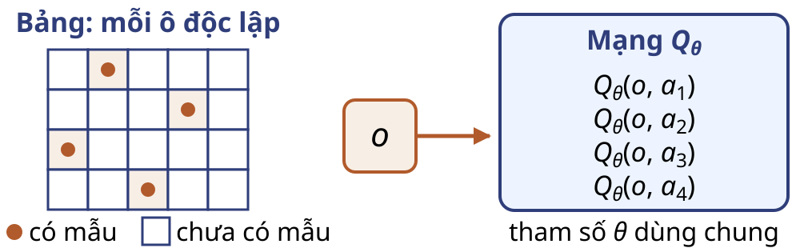
Trực quan. Tham số dùng chung: ô chưa thăm có giá trị; một cập nhật đổi nhiều ô.
Số liệu lấy từ notebook Lunar Lander của Bài 07, trên $2\,000$ lượt của một chính sách cố định (dữ liệu thực hành Bài 05): sáu biến liên tục chia thành $3\cdot4^5=3\,072$ ô, nhân với $3$ mức của số chân chạm đất, được $9\,216$ ô; $1\,896/9\,216\approx0{,}206$, nên $7\,320$ ô chỉ giữ giá trị khởi tạo. Lunar Lander có bốn hành động, nên bảng giá trị hành động trên cùng lưới cần $36\,864$ ô, và mỗi ô chỉ đổi khi chính cặp đó xuất hiện trong dữ liệu. Với ảnh, gần như mọi quan sát mới là một ô chưa từng gặp. Một hàm có tham số dùng chung cho giá trị ở cả quan sát chưa gặp; cái giá là giao thoa: một cập nhật cũng đổi các giá trị đang đúng, như mức lan của Bài 07.
Nguồn: bài giảng gốc lecture8-dqn.pdf (2025–2026), trang 8, 14–15; ghi chú bài giảng Bài 07, Ví dụ 07.1, Mệnh đề 07.2; Bài 06, Mục 1.
Ví dụ: đầu vào bốn khung Atari
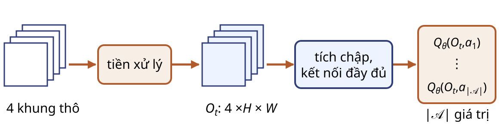
$O_t$: bốn khung xám xếp chồng, $H=W=84$: $4\cdot84\cdot84=28\,224$ số.
$A_t\in\mathcal A$: lệnh điều khiển rời rạc; $R_{t+1}$: thay đổi điểm số.
Mạng tích chập (CNN), tầng kết nối đầy đủ: $\lvert\mathcal A\rvert$ giá trị ($4$ đến $18$), một lần tính.
$H\times W$ là kích thước một khung sau tiền xử lý; các số $84\times84$ và $4$ đến $18$ hành động theo Mnih và cộng sự (2015). Mnih và cộng sự chuyển mỗi khung sang ảnh xám, thu về $84\times84$ và xếp chồng bốn khung gần nhất; số hành động hợp lệ của các trò chơi họ dùng là từ $4$ đến $18$. Bài giảng gốc gọi chồng bốn khung là đầu vào trạng thái; ở đây gọi là quan sát, vì bốn khung chưa chắc đủ thông tin Markov. Mạng có một đầu ra cho mỗi hành động, nên một lần tính xuôi cho mọi giá trị cần cho phép cực đại và cho chọn hành động. Ví dụ chỉ cố định giao diện vào và ra; tái lập kết quả Atari còn cần lặp khung, cách bắt đầu lượt, kiến trúc, siêu tham số và giao thức đánh giá.
Nguồn: bài giảng gốc lecture8-dqn.pdf (2025–2026), trang 17, 35; Mnih và cộng sự (2015), mục Methods (tiền xử lý và kiến trúc).
Mạng giá trị hành động
Nhắc lại: Bài 07 dùng $\hat q(s,a,w)=x(s,a)^\top w$, đặc trưng $x$ chọn trước; $\theta$ thay $w$.
Định nghĩa. Với $\mathcal A$ hữu hạn, mạng giá trị hành động là hàm $\mathbf q_\theta:\mathcal O\to\mathbb R^{\lvert\mathcal A\rvert}$ có tham số $\theta$; với $a\in\mathcal A$, $Q_\theta(o,a)=[\mathbf q_\theta(o)]_a$.
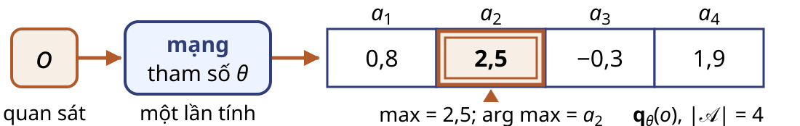
$\max_a$ cho mục tiêu; $\arg\max_a$ cho hành động tham lam.
$\mathcal O$ là tập quan sát, $\theta\in\mathbb R^d$ là tham số, $[\cdot]_a$ lấy thành phần ứng với hành động $a$. Mạng đổi hai chỗ so với Bài 07: các tầng học từ quan sát thay cho đặc trưng chọn tay $x(s,a)$, và $\theta$ đóng vai của $w$. Mỗi hành động có một đầu ra, nên một lần tính xuôi cho cả phép cực đại trong mục tiêu lẫn hành động tham lam mà chính sách $\epsilon_{\mathrm{exp}}$-tham lam cần; nếu mạng nhận cặp $(o,a)$ làm đầu vào thì phải tính $\lvert\mathcal A\rvert$ lần. Trong hình, với $\epsilon_{\mathrm{exp}}=0{,}1$, $a_2$ được chọn với xác suất $0{,}925$, mỗi hành động khác $0{,}025$. Phương trình Bellman tối ưu viết theo quan sát chỉ có nghĩa khi phân phối của $R_{t+1}$ và $O_{t+1}$, cho $O_t$ và $A_t$, không phụ thuộc lịch sử trước đó; khi đó $O_t$ thay được $S_t$. Nếu không, mục tiêu vẫn tính được, nhưng $q_*(o,a)$ không còn được xác định bởi một phương trình Bellman theo quan sát.
Nguồn: bài giảng gốc lecture8-dqn.pdf (2025–2026), trang 14–16, 35; Mnih và cộng sự (2015), mục Methods (kiến trúc mô hình); ghi chú bài giảng Bài 07, Định nghĩa 07.1.
Bốn khung và tính Markov
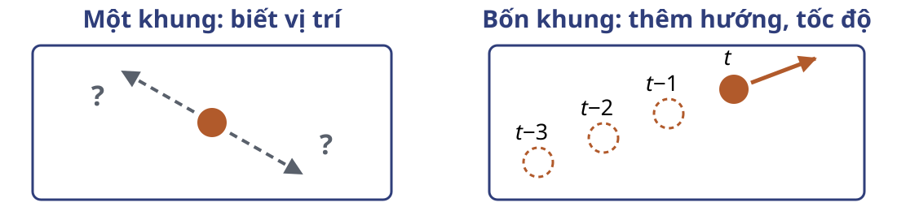
Giả thiết: $O_t$ đủ Markov, tức phân phối của $(R_{t+1},O_{t+1})$ khi biết cả lịch sử chỉ phụ thuộc $O_t,A_t$; nếu không, mục tiêu chỉ là xấp xỉ.
Câu hỏi: chồng bốn khung có làm $O_t$ đủ Markov trong mọi trò chơi Atari không?
Lời giải: không; có thể thiếu thông tin không hiển thị hoặc có trước bốn khung.
Một khung cho vị trí của quả bóng; hai khung liên tiếp cho vận tốc qua hiệu hai vị trí; ba khung cho thêm gia tốc. Trong hình, bốn vị trí cách đều nhau, nên quả bóng đi đều theo hướng lên sang phải và vị trí kế tiếp dự đoán được. Bốn khung vẫn có thể thiếu: một vật bị che, một bộ đếm thời gian không hiển thị, hoặc một sự kiện xảy ra trước cửa sổ bốn khung nhưng còn ảnh hưởng tới phần thưởng sau này. Khi đó cùng một $O_t$ ứng với nhiều tình huống có tương lai khác nhau, và mục tiêu Q-learning tính theo $O_t$ chỉ là xấp xỉ. Số bốn là một lựa chọn thiết kế của Mnih và cộng sự (2015), không có định lý nào bảo đảm nó đủ.
Nguồn: bài giảng gốc lecture8-dqn.pdf (2025–2026), trang 35; Mnih và cộng sự (2015), mục Methods (tiền xử lý); hình vẽ mới.
Ví dụ: một tham số tạo cả dự đoán lẫn đích
$Q_\theta(o,a)=\theta$ với mọi $o,a$; $R_{t+1}=1$, $\gamma=0{,}9$, $\theta_0=0$, $\alpha=0{,}5$.
Tính một bước bán gradient với dự đoán $q$ và đích $y$ (còn gọi là mục tiêu cập nhật):
$$q=Q_\theta(O_t,A_t),\quad y=R_{t+1}+\gamma\max_{a'}Q_\theta(O_{t+1},a'),\quad \theta\leftarrow\theta+\alpha(y-q).$$
$q=0$; $y=1+0{,}9\cdot0=1$.
$\theta_1=0+0{,}5\,(1-0)=0{,}5$.
Đích mới: $y=1+0{,}9\cdot0{,}5=1{,}45$.
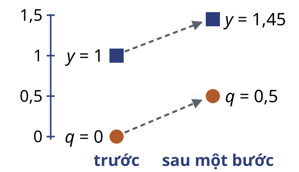
Diễn giải: đích đổi theo $\theta$, nên mỗi bước không còn là hồi quy về nhãn cố định.
Vì $\nabla_\theta Q_\theta=1$, bước bán gradient là $\theta+\alpha(y-q)$: đích được coi là hằng khi lấy đạo hàm nhưng được tính lại bằng $\theta$ mới ở bước sau. Cùng $\theta$ nằm trong cả dự đoán lẫn đích, nên một bước làm $q$ tăng $0{,}5$ và đích tăng $0{,}9\cdot0{,}5=0{,}45$. Lặp lại được $\theta_{n+1}=0{,}95\,\theta_n+0{,}5$; dãy hội tụ về nghiệm của $\theta=1+0{,}9\,\theta$, tức $10$, nhưng mỗi bước chỉ rút khoảng cách tới $10$ đi $5\%$. Với mạng nhiều tham số, cập nhật tại $(O_t,A_t)$ đổi $Q_\theta$ tại $O_{t+1}$ theo cách khó kiểm soát; Mệnh đề 07.37 cho một trường hợp tuyến tính có tham số tăng không chặn. Muốn mỗi bước là hồi quy về một nhãn đứng yên, như học có giám sát, cần tách tham số tạo đích khỏi tham số được cập nhật.
Nguồn: bài giảng gốc lecture8-dqn.pdf (2025–2026), trang 31 (mục tiêu di động); ví dụ số tự xây dựng; ghi chú bài giảng Bài 07, Định nghĩa 07.21, Mệnh đề 07.37.
Mạng mục tiêu
Nhu cầu: đích tính bằng $\theta$ đổi $1\to1{,}45$ sau một bước, cùng mẫu chuyển.
Định nghĩa. Mạng mục tiêu $Q_{\theta^-}$ cùng kiến trúc với mạng trực tuyến (online network) $Q_\theta$; chỉ tính đích, không nhận gradient.
Khởi tạo $\theta^-\leftarrow\theta$; sau bước tối ưu, nếu $k_{\mathrm{opt}}\bmod C=0$ ($C\in\mathbb N_+$), đồng bộ $\theta^-\leftarrow\theta$.
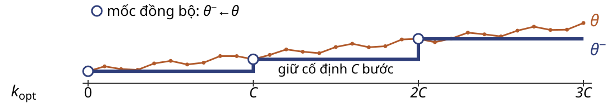
Diễn giải: với $Q_\theta=\theta$, $\theta^-=0$ cố định, đích $1+0{,}9\cdot0=1$ trong $C$ bước.
$C$ là số bước tối ưu giữa hai lần đồng bộ; $k_{\mathrm{opt}}$ tăng sau mỗi lần cập nhật $\theta$, rồi mới kiểm tra điều kiện sao chép toàn bộ $\theta$ sang $\theta^-$. Với $\theta^-$ cố định, mỗi bước cập nhật là hồi quy về một nhãn đứng yên. Trong ví dụ một tham số ($R_{t+1}=1$, $\gamma=0{,}9$, $\alpha=0{,}5$), mạng mục tiêu không đưa $\theta$ tới $10$ nhanh hơn: với $C=3$, sau ba bước khoảng cách tới $10$ nhân $0{,}9125$, còn khi không có mạng mục tiêu là $0{,}95^3\approx0{,}857$. Tác dụng của nó là biến mỗi đoạn $C$ bước thành hồi quy về nhãn đứng yên; lợi ích ổn định với mạng lớn là kết quả thực nghiệm. Với $C=1$, cập nhật trùng với cập nhật bán gradient của ví dụ một tham số. Xấp xỉ hàm, bootstrap và dữ liệu khác chính sách vẫn còn, nên không có bảo đảm hội tụ.
Nguồn: bài giảng gốc lecture8-dqn.pdf (2025–2026), trang 16, 19, 31, 33; Mnih và cộng sự (2015), mục Methods (cập nhật mạng mục tiêu mỗi $C$ bước); hình vẽ lại.
Đích hồi quy
Nhu cầu: mạng không có ô $Q(s,\cdot)=0$ cho trạng thái kết thúc.
Mẫu chuyển mang cờ $Z_{t+1}\in\{0,1\}$, bằng $1$ khi MDP kết thúc tại bước ${t+1}$.
Định nghĩa. Đích hồi quy của mẫu chuyển $(O_t,A_t,R_{t+1},O_{t+1},Z_{t+1})$ là
$$y_t=R_{t+1}+\gamma(1-Z_{t+1})\max_{a'}Q_{\theta^-}(O_{t+1},a').$$
Dự đoán $q_t=Q_\theta(O_t,A_t)$; sai số sai phân thời gian (sai số TD) $\delta_t=y_t-q_t$.
Với $\theta^-$ cố định, $y_t$ là nhãn; cập nhật $\theta$ là hồi quy $q_t$ về $y_t$.
$Z_{t+1}$ chỉ ghi kết thúc của chính MDP; việc dừng thu thập vì một giới hạn bên ngoài được ghi bằng một cờ khác, cờ cắt ngắn. "Đích" ở đây là nhãn $y_t$, khác "chính sách đích" của Bài 06. $y_t$ tạo từ một phần thưởng quan sát được và giá trị của mạng mục tiêu; khi $O_t$ đủ Markov, nó là một mẫu có kỳ vọng có điều kiện bằng $(\mathcal TQ_{\theta^-})(O_t,A_t)$, với $\mathcal T$ là toán tử Bellman tối ưu, không phải ước lượng không chệch của $q_*$. Trong học có giám sát, nhãn là giá trị đo được và không phụ thuộc mô hình đang học. $q_t$ là dự đoán của mạng, khác $q_*$. Nó cố định trong $C$ bước tối ưu giữa hai lần đồng bộ. Khi $Z_{t+1}=1$, không còn phần thưởng sau bước kết thúc, nên phần bootstrap bị nhân với $0$ và $y_t=R_{t+1}$, đúng quy ước $Q(s,\cdot)=0$ tại trạng thái kết thúc của Q-learning dạng bảng.
Nguồn: bài giảng gốc lecture8-dqn.pdf (2025–2026), trang 16, 20–22, 34; ghi chú bài giảng Bài 06, Định nghĩa 06.15; Bài 07, Định nghĩa 07.19, 07.35.
Ví dụ: đích tại mẫu chuyển kết thúc
Cho $\gamma=0{,}9$ và một mẫu chuyển kết thúc lượt; tính $y_t$, $\delta_t$.
$R_{t+1}$ $Z_{t+1}$ $\max_{a'}Q_{\theta^-}(O_{t+1},a')$ $q_t$ $-2$ $1$ $100$ $-1{,}5$
$y_t=-2+0{,}9\cdot(1-1)\cdot100=-2$.
$\delta_t=y_t-q_t=-2-(-1{,}5)=-0{,}5$.
Câu hỏi: bỏ mặt nạ, tức coi $Z_{t+1}=0$, thì $y_t$ và $\delta_t$ bằng bao nhiêu?
Lời giải: $y_t=-2+0{,}9\cdot100=88$; $\delta_t=88-(-1{,}5)=89{,}5$.
Diễn giải: bỏ mặt nạ, đích lệch $90$ và $\delta_t$ đổi dấu; dự đoán bị kéo lên thay vì xuống.
Sau bước kết thúc không còn phần thưởng nào, nên giá trị đúng của phần còn lại là $0$. Dạng bảng ghi điều này bằng quy ước $Q(s,\cdot)=0$ tại trạng thái kết thúc; mạng không có ô riêng như vậy, và $\max_{a'}Q_{\theta^-}(O_{t+1},a')=100$ chỉ là đầu ra của mạng tại quan sát cuối lượt, không ứng với phần thưởng nào. Mặt nạ $(1-Z_{t+1})$ thay cho quy ước đó. Lỗi thường gặp trong cài đặt là quên mặt nạ hoặc dùng sai cờ; khi đó giá trị tùy ý ở cuối lượt được lan ngược qua các mẫu chuyển trước. Cùng số liệu này là mẫu thứ hai của mini-batch hai mẫu chuyển dùng ở phần 4.
Nguồn: bài giảng gốc lecture8-dqn.pdf (2025–2026), trang 21; ví dụ số tự xây dựng; ghi chú bài giảng Bài 06, Định nghĩa 06.15.
Kết thúc và cắt ngắn
Nhu cầu: lượt dừng vì MDP kết thúc hoặc hết số bước; hai trường hợp cần hai đích.
Ký hiệu: $U_{t+1}=1$ khi dừng thu thập vì giới hạn ngoài MDP; mẫu chuyển lưu $(O_t,A_t,R_{t+1},O_{t+1},Z_{t+1},U_{t+1})$.
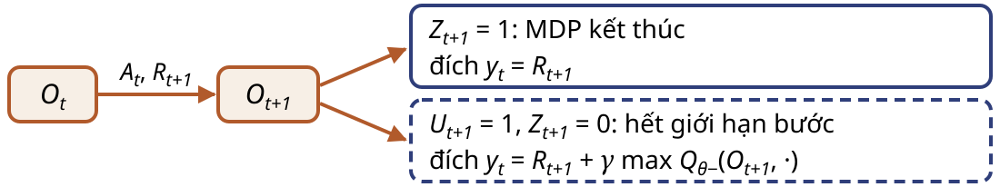
Mặt nạ chỉ dùng $1-Z_{t+1}$; đặt lại môi trường khi $Z_{t+1}\lor U_{t+1}=1$.
$U_{t+1}\in\{0,1\}$ là cờ cắt ngắn. Giới hạn số bước là quy định của người thu thập dữ liệu, không thuộc động lực của MDP: nếu tác tử đi tiếp từ $O_{t+1}$ thì vẫn nhận thêm phần thưởng. Vì vậy với $U_{t+1}=1$, $Z_{t+1}=0$, phần lợi tức còn lại vẫn được ước lượng bằng $\gamma\max_{a'}Q_{\theta^-}(O_{t+1},a')$, và đích vẫn bootstrap. Hai cờ có hai vai: $Z$ quyết định đích, $Z\lor U$ quyết định việc đặt lại môi trường để bắt đầu lượt mới. Nếu giới hạn thời gian là một phần của nhiệm vụ và thời gian còn lại có trong quan sát, hết giờ là kết thúc thật và $Z_{t+1}=1$.
Nguồn: bài giảng gốc lecture8-dqn.pdf (2025–2026), trang 21; Pardo và cộng sự (2018), "Time Limits in Reinforcement Learning", ICML; hình vẽ mới.
Ví dụ: đích tại mẫu chuyển bị cắt ngắn
Cho $\gamma=0{,}9$ và một mẫu chuyển chạm giới hạn số bước khi MDP chưa kết thúc:
$R_{t+1}$ $Z_{t+1}$ $U_{t+1}$ $\max_{a'}Q_{\theta^-}(O_{t+1},a')$ $1$ $0$ $1$ $4$
$y_t=1+0{,}9\cdot(1-0)\cdot4=4{,}6$.
Câu hỏi: dùng mặt nạ $1-(Z_{t+1}\lor U_{t+1})$ thì $y_t$ bằng bao nhiêu?
Lời giải: $y_t=1$.
Diễn giải: đích bị hạ $3{,}6$ ở mọi mẫu chuyển chạm giới hạn.
Với mặt nạ gộp, $1-(0\lor1)=0$ nên phần bootstrap bị xóa và $y_t=R_{t+1}=1$, như thể lượt kết thúc thật ở bước giới hạn. Mọi mẫu chuyển chạm giới hạn đều bị hạ $0{,}9\cdot4=3{,}6$, nên mạng học rằng quan sát gần cuối lượt có giá trị thấp, dù MDP không có lý do nào cho điều này. Lỗi thường gặp là gộp hai cờ thành một cờ "xong" rồi dùng làm mặt nạ; cờ gộp chỉ dùng để quyết định việc đặt lại môi trường. Số liệu này là mẫu thứ nhất của mini-batch hai mẫu chuyển dùng ở phần 4, giả sử bị cắt ngắn.
Nguồn: bài giảng gốc lecture8-dqn.pdf (2025–2026), trang 21; Pardo và cộng sự (2018); ví dụ số tự xây dựng.
3. Bộ nhớ phát lạiMuốn mini‑batch ít tương quan, phải lưu mẫu chuyển rồi lấy mẫu đều từ bộ nhớ.
Tương quan ngắn hạn · Bộ đệm vòng · Lấy mẫu đều · Dữ liệu khác chính sách
Đến đây mỗi mẫu chuyển sáu thành phần đã có một đích hồi quy tính từ mạng mục tiêu. Các mẫu thu liền nhau trên một quỹ đạo lại gần giống nhau và do cùng một phiên bản chính sách sinh ra. Mẫu chuyển được lưu vào bộ nhớ dung lượng $N$, mini-batch cỡ $b$ được rút đều; dữ liệu trong bộ nhớ khác chính sách đích theo hai nguồn, và cơ chế này không tạo mẫu độc lập cùng một phân phối cố định, cũng không bảo đảm hội tụ. Ở phần 4, mini-batch được dùng để tính hàm mất mát.
Tương quan giữa các mẫu chuyển liên tiếp
Nhu cầu: $b$ mẫu gần độc lập để gradient mini‑batch giảm phương sai.
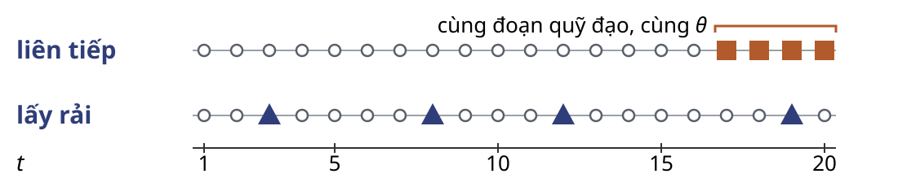
Ví dụ. Bốn gradient liền nhau: phương sai $\sigma^2$, tương quan $0{,}9^k$ khi cách $k$ bước.
Trung bình $\bar g$ có $\operatorname{Var}\bar g\approx0{,}88\,\sigma^2$; nếu độc lập: $0{,}25\,\sigma^2$.
Diễn giải: bốn mẫu liền nhau chỉ bằng ${\approx1{,}1}$ mẫu độc lập (cỡ mẫu hiệu dụng).
Bốn số trong ví dụ là cùng một tọa độ của bốn gradient mẫu. Phương sai của trung bình $\bar g$ của chúng là $\sigma^2/16$ nhân tổng các tương quan $0{,}9^{\lvert i-j\rvert}$ trên mọi cặp $(i,j)$, tức $\sigma^2(4+2(3\cdot0{,}9+2\cdot0{,}81+0{,}729))/16\approx0{,}881\,\sigma^2$; bốn mẫu độc lập cho $0{,}25\,\sigma^2$. Cỡ mẫu hiệu dụng (effective sample size), tức số mẫu độc lập cho cùng phương sai, là $\sigma^2/\operatorname{Var}\bar g=1/0{,}881\approx1{,}1$. Tương quan $0{,}9^k$ là giả thiết minh họa. Tương quan không nhất thiết làm gradient trung bình bị chệch; với tương quan dương, hệ quả là phương sai lớn hơn và hướng cập nhật đi theo vùng quan sát vừa thăm. Bài giảng gốc nêu thêm: mạng có thể quá khớp quỹ đạo gần đây và quên các vùng trạng thái cũ hơn.
Nguồn: bài giảng gốc lecture8-dqn.pdf (2025–2026), trang 19, 29–30; ví dụ số tự xây dựng; hình vẽ mới.
Bộ nhớ phát lại
Nhu cầu: mẫu rải theo thời gian.
Định nghĩa. Bộ nhớ phát lại $\mathcal D$ là bộ đệm vòng dung lượng $N$ mẫu chuyển.
Đầy thì ghi đè mẫu cũ nhất; mini‑batch gồm $b$ lần rút đều.
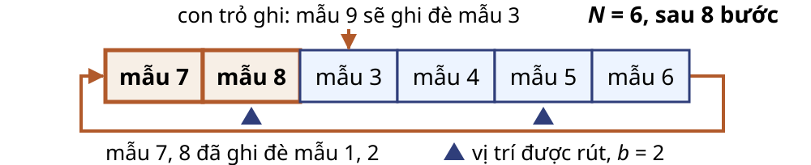
Ví dụ. $N=6$, sau $8$ bước: mỗi lần rút, mỗi mẫu $3,\dots,8$ có xác suất $1/6$.
Lưu ý: khi môi trường tự đặt lại, lưu quan sát cuối lượt làm $O_{t+1}$.
Bộ đệm vòng (ring buffer) có một con trỏ ghi; con trỏ đi qua các vị trí $1,\dots,N$ rồi quay về $1$, nên mẫu chuyển thứ $k$ nằm ở vị trí $((k-1)\bmod N)+1$: với $N=6$, mẫu $7$ ở vị trí $1$, mẫu $9$ sẽ vào vị trí $3$. Trước khi đầy, $\lvert\mathcal D\rvert<N$ và mỗi lần rút chọn mỗi mẫu với xác suất $1/\lvert\mathcal D\rvert$. Dù rút có hoàn lại hay không hoàn lại (khi đó $b\le\lvert\mathcal D\rvert$), từng lần rút có phân phối biên đều. Mnih và cộng sự (2015) dùng $N=10^6$, $b=32$. Khi môi trường tự đặt lại, quan sát trả về sau bước cuối có thể đã thuộc lượt mới; tên trường chứa quan sát cuối phụ thuộc phiên bản API. Lưu nhầm quan sát đầu lượt mới làm $O_{t+1}$ thì mẫu chuyển bị cắt ngắn có đích bootstrap từ một quan sát không nối với $O_t$. Vì mỗi mẫu do hành vi lúc thu thập sinh ra, $\mathcal D$ trộn dữ liệu của nhiều chính sách hành vi.
Nguồn: bài giảng gốc lecture8-dqn.pdf (2025–2026), trang 18–20, 32; Mnih và cộng sự (2015), mục Methods (bộ nhớ chỉ giữ $N$ mẫu gần nhất, lấy mẫu đều) và Extended Data Table 1; ví dụ số tự xây dựng; hình vẽ mới.
Dữ liệu khác chính sách trong bộ nhớ
Hai nguồn khác chính sách đích:
hành vi $\epsilon_{\mathrm{exp}}$-tham lam khác chính sách đích tham lam theo $Q_{\theta^-}$;
$\mathcal D$ giữ mẫu của các phiên bản $\theta$ cũ.
Không cần tỉ số lấy mẫu quan trọng: $A_i$ là đối số điều kiện của $Q_\theta(O_i,A_i)$;
Giả thiết: $O_i$ đủ Markov, động lực không đổi; hành vi chỉ quyết định tần suất $(O_i,A_i)$.
Với $\epsilon_{\mathrm{exp}}>0$, ngay cả hành vi theo $\theta$ hiện tại cũng khác chính sách tham lam mà đích đánh giá. Đích $y_i=R_i+\gamma(1-Z_i)\max_{a'}Q_{\theta^-}(O'_i,a')$ ước lượng giá trị của cặp $(O_i,A_i)$ đã cho: hành vi chỉ quyết định cặp nào xuất hiện. Khi $O_i$ đủ Markov và động lực không đổi, phân phối của $(R_i,O'_i)$ khi biết $(O_i,A_i)$ không phụ thuộc phiên bản hành vi, nên mẫu cũ vẫn là mẫu đúng của động lực. Tại $O'_i$, chính sách đích tham lam có kỳ vọng đúng bằng $\max_{a'}$, không có hành động nào lấy từ hành vi cần hiệu chỉnh. Với giá trị hành động, tỉ số lấy mẫu quan trọng cần khi đích dùng các hành động sau $A_i$ do hành vi chọn, như đích nhiều bước. Tần suất các cặp trong mini‑batch vẫn theo hành vi; với xấp xỉ hàm, đó là yếu tố học khác chính sách của bộ ba bất ổn.
Nguồn: bài giảng gốc lecture8-dqn.pdf (2025–2026), trang 6–7, 19, 32; Sutton và Barto (2018), §6.6 (Expected Sarsa, với chính sách đích tham lam trùng Q-learning), §7.3 (tỉ số lấy mẫu quan trọng cho đích nhiều bước); ghi chú bài giảng Bài 06, Nhận xét 06.17; hình vẽ mới.
Giới hạn của bộ nhớ phát lại
Làm được Giảm tương quan ngắn hạn. Tái sử dụng mẫu. Trộn nhiều đoạn quỹ đạo. Không bảo đảm Độc lập, cùng phân phối cố định. Phân phối của $\mathcal D$ đứng yên. Hội tụ.
Câu hỏi: $N=6$, $\mathcal D$ chứa mẫu $3,\dots,8$, rút không hoàn lại $b=2$. Tính xác suất rút cặp mẫu $4$, mẫu $5$; cặp liền nhau.
Lời giải: $\binom62=15$ cặp đồng khả năng: $1/15$; $5$ cặp liền nhau: $5/15=1/3$.
Rút không hoàn lại hai trong sáu mẫu cho $\binom62=15$ cặp đồng khả năng, nên cặp mẫu $4$, mẫu $5$ có xác suất $1/15$. "Liền nhau" xét theo thứ tự thu thập: năm cặp từ $(3,4)$ đến $(7,8)$, kể cả mẫu $6$ ở vị trí $6$ và mẫu $7$ ở vị trí $1$. Với $N$ mẫu, xác suất này là $(N-1)/\binom N2=2/N$, tức $2\cdot10^{-6}$ khi $N=10^6$: tương quan ngắn hạn giảm theo $N$ nhưng không biến mất. Khi biết $\mathcal D$, các lần rút có hoàn lại độc lập và cùng phân phối theo phân phối thực nghiệm của $\mathcal D$. Phân phối đó không cố định: nội dung của $\mathcal D$ là các đoạn liền của những quỹ đạo do chính tác tử thu thập, trôi theo hành vi vốn đổi cùng $\theta$, và mất dần mẫu cũ. Xấp xỉ hàm, bootstrap và học khác chính sách vẫn còn, nên bộ nhớ phát lại không tạo bảo đảm hội tụ; tác dụng của nó được đánh giá bằng thí nghiệm.
Nguồn: bài giảng gốc lecture8-dqn.pdf (2025–2026), trang 19, 29–32; Mnih và cộng sự (2015), mục Methods (giới hạn của lấy mẫu đều và ghi đè); ví dụ số tự xây dựng.
4. Hàm mất mát và thuật toán DQNMuốn cập nhật $\theta$ từ mini‑batch, phải lấy gradient chỉ qua dự đoán của mạng trực tuyến.
Phép chọn theo hành động · Dừng gradient · Sai số bình phương trung bình · Hai bộ đếm · Kích thước tensor
Đến đây mỗi mẫu chuyển đã có đích $y_i$, và mỗi bước tối ưu có một mini-batch $b$ mẫu rút đều từ bộ nhớ phát lại; còn thiếu bước cập nhật $\theta$. Hàm mất mát là sai số bình phương trung bình trên mini-batch, chỉ dùng giá trị của hành động đã lưu, và gradient không đi qua đích. Thu thập, lưu, tối ưu và đồng bộ được ghép thành thuật toán với hai bộ đếm $t$ và $k_{\mathrm{opt}}$. Ở phần 5, bộ tối ưu biến gradient của hàm mất mát thành bước tham số.
Hàm mất mát trên mini‑batch
Nhu cầu: gộp $b$ cặp $(q_i,y_i)$ thành một hàm vô hướng của $\theta$.
Ký hiệu: $i$ đánh số mẫu $(O_i,A_i,R_i,O'_i,Z_i,U_i)$, không phải thời điểm; $q_i$ khác $q_*$.
$$q_i=Q_\theta(O_i,A_i),\qquad y_i=R_i+\gamma(1-Z_i)\max_{a'}Q_{\theta^-}(O'_i,a').$$
Định nghĩa. Với $y_i$ là hằng theo $\theta$,
$$L_B(\theta)=\tfrac1b\textstyle\sum_{i=1}^b\bigl(y_i-q_i\bigr)^2.$$
Lưu ý: với $Q_\theta$ là mạng nhiều tầng, $L_B$ nói chung không lồi theo $\theta$; bộ tối ưu không bảo đảm cực tiểu toàn cục.
$q_i$ là dự đoán của mạng trên mẫu $i$, không phải giá trị hành động tối ưu $q_*$. Mini-batch $B$ gồm $b$ mẫu rút đều từ bộ nhớ phát lại; khi đã rút, chỉ số $i$ chỉ đánh số mẫu, nên viết $R_i$, $O'_i$ thay cho $R_{t+1}$, $O_{t+1}$. $U_i$ không vào đích: cờ cắt ngắn chỉ quyết định việc đặt lại môi trường lúc thu thập. Đích $y_i$ chỉ phụ thuộc $\theta^-$ và dữ liệu, nên với $\theta^-$ cố định nó là một hằng số khi lấy gradient theo $\theta$, và cực tiểu $L_B$ là một bài hồi quy bình phương tối thiểu của $q_i$ về $y_i$. Sai số bình phương trung bình là lựa chọn của bài để phép tính minh bạch; hàm mất mát Huber, ít nhạy với sai số lớn, là một lựa chọn khác trong thực hành. Với $Q_\theta$ tuyến tính theo $\theta$, $L_B$ lồi; với mạng nhiều tầng, $L_B$ nói chung không lồi.
Nguồn: bài giảng gốc lecture8-dqn.pdf (2025–2026), trang 16, 20–22, 34; Goodfellow, Bengio và Courville (2016), Chương 6 (hàm mất mát) và Chương 8 (tối ưu không lồi).
Dừng gradient ở đích
Nhắc lại: Q-learning bán gradient (Bài 07) coi mục tiêu là hằng khi lấy đạo hàm theo $w$.
Định nghĩa. Dừng gradient (stop-gradient): $\operatorname{sg}(x)$ có giá trị $x$, đạo hàm bằng $0$; trong PyTorch: detach, no_grad.
Phép chọn theo hành động (gather): $q_i=[\mathbf q_\theta(O_i)]_{A_i}$, giá trị của hành động đã lưu.
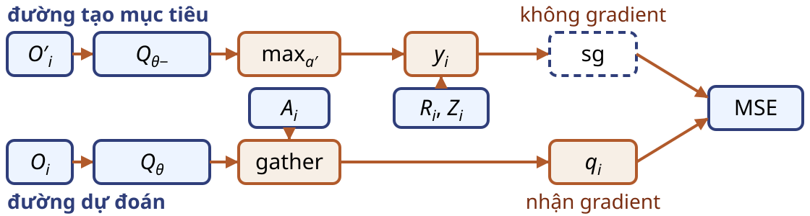
Mạng trực tuyến trả về vector $\mathbf q_\theta(O_i)$ gồm $\lvert\mathcal A\rvert$ giá trị; hàm mất mát chỉ dùng giá trị của hành động $A_i$ đã lưu trong mẫu, nên phép chọn theo hành động lấy đúng một phần tử ở mỗi hàng của mảng $[b,\lvert\mathcal A\rvert]$. Hành động tham lam của mạng không tham gia vào $q_i$. Trên đường tạo đích, mạng mục tiêu nhận $O'_i$, phép cực đại chọn giá trị lớn nhất, rồi $R_i$ và $Z_i$ cho $y_i$; đường này nằm trong $\operatorname{sg}$, nên thư viện vi phân tự động không truyền gradient qua nó. Đường dự đoán đi qua $Q_\theta$ và nhận gradient. Mạng mục tiêu chỉ cung cấp phần bootstrap của đích.
Nguồn: bài giảng gốc lecture8-dqn.pdf (2025–2026), trang 16, 20–22, 33–34; ghi chú bài giảng Bài 07, Định nghĩa 07.35 (bán gradient); hình vẽ lại.
Dừng gradient ở đích
Dạng cài đặt của hàm mất mát; gradient chỉ đi qua đường dự đoán $q_i$:
$$L_B(\theta)=\tfrac1b\textstyle\sum_{i=1}^b\bigl(\operatorname{sg}(y_i)-q_i\bigr)^2,\qquad\nabla_\theta L_B=\tfrac2b\textstyle\sum_{i=1}^b(q_i-y_i)\nabla_\theta q_i.$$
Với $\theta^-$ riêng, $\nabla_\theta y_i=0$; $\operatorname{sg}$ cần khi đích tính bằng chính $\theta$.
Câu hỏi: $Q_\theta=\theta$, $\theta=0$, đích $y=1+0{,}9\,\theta$ tính bằng chính $\theta$. Tính đạo hàm của $(y-q)^2$ theo $\theta$ khi có và không có $\operatorname{sg}$.
Lời giải: có $\operatorname{sg}$: $-2(y-q)=-2$; không có: $-0{,}2(1-0{,}1\,\theta)=-0{,}2$.
Với $y_i$ là hằng, đạo hàm của $(y_i-q_i)^2$ theo $\theta$ là $2(q_i-y_i)\nabla_\theta q_i$; lấy trung bình trên $b$ mẫu cho công thức trên. Khi đích tính bằng $\theta^-$ là một vector riêng, $y_i$ không phụ thuộc $\theta$ nên $\nabla_\theta y_i=0$ về mặt toán học; $\operatorname{sg}$ là cách cài đặt bảo đảm thư viện vi phân tự động không lần theo đường tạo đích, ví dụ khi mạng mục tiêu dùng chung tham số với mạng trực tuyến. Khi đích tính bằng chính $\theta$, như trong câu hỏi, $\operatorname{sg}$ cho đúng cập nhật bán gradient của Bài 07; không có $\operatorname{sg}$, gradient đi qua cả đích, $(1-0{,}1\,\theta)^2$ có đạo hàm $-0{,}2$ tại $\theta=0$, nhỏ hơn mười lần và là một phương pháp khác, gradient dư (residual gradient).
Nguồn: bài giảng gốc lecture8-dqn.pdf (2025–2026), trang 16, 22, 34; Sutton và Barto (2018), §9.3 (bán gradient), §11.5 (gradient dư); ví dụ số tự xây dựng.
Bài tập: một mini‑batch
Cho $b=2$, $\gamma=0{,}9$ và mini‑batch hai mẫu chuyển:
$i$ $R_i$ $Z_i$ $\max_{a'}Q_{\theta^-}(O'_i,a')$ $q_i$ $1$ $1$ $0$ $4$ $3{,}1$ $2$ $-2$ $1$ $100$ $-1{,}5$
Câu hỏi: tính $y_i$, $\delta_i=y_i-q_i$, $L_B$ và $\partial L_B/\partial q_i$ với $i=1,2$.
Nhắc lại hai công thức cần dùng: đích $y_i=R_i+\gamma(1-Z_i)\max_{a'}Q_{\theta^-}(O'_i,a')$ và hàm mất mát $L_B=\tfrac1b\sum_i(y_i-q_i)^2$, với $y_i$ là hằng theo $\theta$. Gợi ý: áp mặt nạ $(1-Z_i)$ trước khi tính sai số; mẫu 2 có $Z_2=1$, nên giá trị $100$ của mạng mục tiêu tại quan sát cuối lượt không vào đích. Với $b=2$, $\partial L_B/\partial q_i=\tfrac2b(q_i-y_i)=q_i-y_i$. Mẫu 1 có $Z_1=0$, nên $y_1$ bootstrap từ giá trị $4$.
Nguồn: bài tập xây từ công thức của bài giảng gốc lecture8-dqn.pdf (2025–2026), trang 21–22, 34; ví dụ số tự xây dựng.
Bài tập: một mini‑batch
Lời giải: $\gamma=0{,}9$, $b=2$; với $m_i=\max_{a'}Q_{\theta^-}(O'_i,a')$, bộ $(R_i,Z_i,m_i,q_i)$ là $(1;0;4;3{,}1)$, $(-2;1;100;-1{,}5)$.
bước mẫu 1 mẫu 2
đích $y_i$, mặt nạ $1-Z_i$ $1+0{,}9\cdot1\cdot4=4{,}6$ $-2+0{,}9\cdot0\cdot100=-2$ sai số $\delta_i=y_i-q_i$ $1{,}5$ $-0{,}5$ $\partial L_B/\partial q_i=q_i-y_i$ $-1{,}5$ $0{,}5$ hàm mất mát $L_B$ $\tfrac12(1{,}5^2+0{,}5^2)=1{,}25$
Câu hỏi: xét $q_1,q_2$ như hai biến riêng, một bước hạ gradient nhỏ làm $q$ nào tăng?
Lời giải: mẫu 1: đạo hàm âm nên $q_1$ tăng; $q_2$ giảm.
Bộ bốn $(R_i,Z_i,m_i,q_i)$ ghi phần thưởng, cờ kết thúc, giá trị lớn nhất của mạng mục tiêu tại $O'_i$ và dự đoán của mẫu $i$. Mặt nạ đặt trước sai số: mẫu 2 kết thúc lượt nên phần bootstrap bị xóa và $y_2=R_2=-2$; nếu quên mặt nạ, $y_2=88$ và dấu của $\delta_2$ đổi. Với $b=2$, hệ số $\tfrac2b$ bằng $1$, nên đạo hàm theo $q_i$ là $q_i-y_i$. Câu hỏi xét $q_1$, $q_2$ như hai biến riêng. Trong DQN, cả hai cùng phụ thuộc $\theta$: một bước $\Delta\theta=-\eta\nabla_\theta L_B$ cho $\Delta q_1\approx\eta\bigl(1{,}5\lVert\nabla q_1\rVert^2-0{,}5\,\nabla q_1^\top\nabla q_2\bigr)$, nên dấu của $\Delta q_1$ còn phụ thuộc mẫu kia; nếu $\nabla q_1^\top\nabla q_2>3\lVert\nabla q_1\rVert^2$, $q_1$ giảm. Tham số dùng chung là nguồn của cả khái quát hóa lẫn giao thoa giữa các mẫu.
Nguồn: bài tập xây từ công thức của bài giảng gốc lecture8-dqn.pdf (2025–2026), trang 21–22, 34; ví dụ số tự xây dựng.
Vòng huấn luyện DQN
Nhu cầu: mỗi bước môi trường sinh một mẫu chuyển; mỗi bước tối ưu cần một mini‑batch.
Hai nhịp chạy xen kẽ; $t$ đếm bước môi trường, $k_{\mathrm{opt}}$ đếm bước tối ưu.
Vòng thu thập chạy theo $t$: mạng trực tuyến $Q_\theta$ chọn $A_t$ theo quy tắc $\epsilon_{\mathrm{exp}}$-tham lam từ $Q_\theta(O_t,\cdot)$, môi trường trả $R_{t+1}$, $O_{t+1}$ và hai cờ $Z_{t+1}$, $U_{t+1}$, mẫu chuyển được ghi vào $\mathcal D$, và $O_{t+1}$ thành quan sát của bước kế tiếp. Vòng tối ưu chạy theo $k_{\mathrm{opt}}$: rút đều $b$ mẫu từ $\mathcal D$, tính đích $y_i$ bằng $Q_{\theta^-}$, rồi một bước gradient của $L_B$ cập nhật $\theta$. Hai vòng dùng chung $Q_\theta$, nên mỗi bước tối ưu đổi hành vi, và hành vi đổi lại làm đổi dữ liệu ghi vào $\mathcal D$. Mạng mục tiêu chỉ đổi tại mốc đồng bộ, đếm theo $k_{\mathrm{opt}}$ chứ không theo $t$. Ví dụ về hai nhịp: Mnih và cộng sự (2015) tối ưu sau mỗi $4$ bước môi trường và đồng bộ sau mỗi $10\,000$ bước tối ưu, nên khi bộ nhớ đã đủ mẫu, $\theta^-$ đứng yên trong $40\,000$ bước môi trường.
Nguồn: bài giảng gốc lecture8-dqn.pdf (2025–2026), trang 18 (sáu bước của quy trình huấn luyện) và 21 (giả mã); Mnih và cộng sự (2015), Extended Data Table 1 (update frequency 4, target network update frequency 10 000, đếm theo số lần cập nhật tham số); hình vẽ mới.
Thuật toán DQN: đầu vào và khởi tạo
Đầu vào: $\gamma\in[0,1)$, $\epsilon_{\mathrm{exp}}\in[0,1]$; bộ tối ưu, tốc độ học $\eta>0$; ngân sách $T$ bước môi trường; năm số nguyên dương:
$N$ dung lượng của $\mathcal D$ $b$ cỡ mini‑batch $N_{\mathrm{start}}$ số mẫu trước bước tối ưu đầu; $b\le N_{\mathrm{start}}\le N$ $F$ bước môi trường giữa hai bước tối ưu $C$ bước tối ưu giữa hai lần đồng bộ
Đầu ra: $\theta$; chính sách tham lam theo $Q_\theta$.
Khởi tạo: $\mathcal D\leftarrow\varnothing$; $\theta$ ngẫu nhiên; $\theta^-\leftarrow\theta$; $O_0$ từ đặt lại; $t\leftarrow0$; $k_{\mathrm{opt}}\leftarrow0$.
Miền $\gamma<1$ cùng phần thưởng bị chặn giữ lợi tức hữu hạn cả khi lượt không kết thúc. $\epsilon_{\mathrm{exp}}$ có thể giảm theo một lịch định trước. Bộ tối ưu nhận gradient của $L_B$ và trả bước tham số; quy tắc cập nhật cụ thể của bộ tối ưu nằm ở phần 5. Ngân sách $T$ đếm theo $t$; có thể thay bằng một tiêu chuẩn dừng định trước. $N_{\mathrm{start}}\ge b$ để lần rút đầu có thể gồm $b$ mẫu khác nhau (bắt buộc khi rút không hoàn lại); $N_{\mathrm{start}}\le N$ vì $\lvert\mathcal D\rvert\le N$, nếu không bước tối ưu không bao giờ chạy. $F$ đếm theo $t$, $C$ đếm theo $k_{\mathrm{opt}}$; với $C=1$, đích tính bằng chính tham số đang học. Ví dụ: Mnih và cộng sự (2015) dùng $N=10^6$, $b=32$, $N_{\mathrm{start}}=5\cdot10^4$, $F=4$, $C=10^4$, nên khi đã tối ưu, $\theta^-$ đứng yên $F\cdot C=4\cdot10^4$ bước môi trường. Chính sách đầu ra tham lam, khác hành vi $\epsilon_{\mathrm{exp}}$-tham lam dùng khi thu thập.
Nguồn: bài giảng gốc lecture8-dqn.pdf (2025–2026), trang 21 (khởi tạo bộ nhớ dung lượng $N$, hai mạng với $\theta^-=\theta$); Mnih và cộng sự (2015), Extended Data Table 1 (replay memory size, minibatch size, replay start size, update frequency, target network update frequency); bổ sung miền, ngân sách và hai bộ đếm.
Thuật toán DQN: tương tác và lưu
Lặp khi $t<T$:
Chọn $A_t$ theo $\epsilon_{\mathrm{exp}}$-tham lam từ $Q_\theta(O_t,\cdot)$, $O_t$ là quan sát hiện hành.
Thực hiện $A_t$; nhận $R_{t+1}$, $Z_{t+1}$, $U_{t+1}$ và quan sát trả về.
Lưu $(O_t,A_t,R_{t+1},O_{t+1},Z_{t+1},U_{t+1})$ vào $\mathcal D$; $O_{t+1}$ là quan sát cuối của mẫu chuyển, lấy trước khi đặt lại.
Nếu $Z_{t+1}\lor U_{t+1}$: đặt lại; bước kế bắt đầu từ quan sát đầu lượt mới.
Hành vi dùng mạng trực tuyến hiện hành: với xác suất $\epsilon_{\mathrm{exp}}$ chọn đều một hành động, ngược lại chọn hành động có $Q_\theta(O_t,a)$ lớn nhất. $Z_{t+1}=1$ khi MDP kết thúc, $U_{t+1}=1$ khi lượt bị cắt vì giới hạn bước. Khi môi trường tự đặt lại, quan sát trả về sau bước cuối có thể đã thuộc lượt mới; mẫu chuyển phải mang quan sát cuối của lượt cũ. Với $Z_{t+1}=1$, mặt nạ xóa phần bootstrap nên lỗi này không lộ; với mẫu bị cắt ngắn, $Z_{t+1}=0$, đích bootstrap từ đúng quan sát đó. Đặt lại khi $Z_{t+1}\lor U_{t+1}$, nhưng đích chỉ dùng $1-Z$. Sau khi đặt lại, quan sát hiện hành của bước kế là quan sát đầu lượt mới; $O_{t+1}$ trong mẫu đã lưu vẫn là quan sát cuối. Tăng $t$ sau khi lưu, nên khi kiểm điều kiện tối ưu, $t$ là số bước môi trường đã xong và $\lvert\mathcal D\rvert=\min(t,N)$.
Nguồn: bài giảng gốc lecture8-dqn.pdf (2025–2026), trang 21 (chọn hành động $\epsilon$-tham lam, thực hiện, lưu vào $\mathcal D$); Pardo và cộng sự (2018), "Time Limits in Reinforcement Learning" (bootstrap tại mẫu bị cắt ngắn); bổ sung hai cờ và quan sát cuối khi tự đặt lại.
Thuật toán DQN: tối ưu và đồng bộ
Nếu $\lvert\mathcal D\rvert\ge N_{\mathrm{start}}$ và $t\bmod F=0$:
Rút đều $b$ mẫu $(O_i,A_i,R_i,O'_i,Z_i,U_i)$ từ $\mathcal D$.
$q_i=[\mathbf q_\theta(O_i)]_{A_i}$ (phép chọn theo hành động).
$y_i=\operatorname{sg}\bigl(R_i+\gamma(1-Z_i)\max_{a'}Q_{\theta^-}(O'_i,a')\bigr)$.
Bộ tối ưu cập nhật $\theta$ theo $\nabla_\theta L_B$; ${k_{\mathrm{opt}}\leftarrow k_{\mathrm{opt}}+1}$.
Nếu $k_{\mathrm{opt}}\bmod C=0$: $\theta^-\leftarrow\theta$.
Quay lại bước 1, kể cả khi bỏ qua bước 5–9; khi $t=T$, dừng và trả $\theta$.
$t$ đếm bước môi trường, $k_{\mathrm{opt}}$ đếm bước tối ưu; $F$ thuộc nhịp của $t$, $C$ thuộc nhịp của $k_{\mathrm{opt}}$. Điều kiện tối ưu được kiểm sau khi $t$ đã tăng ở bước 4. Thứ tự ở bước 8 và 9 là cập nhật $\theta$, tăng $k_{\mathrm{opt}}$, rồi mới kiểm $C$: lần đồng bộ đầu xảy ra sau đúng $C$ bước tối ưu. Nếu kiểm trước khi tăng, $k_{\mathrm{opt}}=0$ ở bước tối ưu đầu và $\theta^-$ bị gán bằng $\theta$ ngay sau một cập nhật. Giữa hai mốc đồng bộ, $\theta^-$ cố định, nên đích của mỗi mẫu đã lưu cố định; đích chỉ đổi tại mốc đồng bộ. $L_B$ là sai số bình phương trung bình của $q_i$ và $y_i$. Đánh giá dùng chính sách tham lam theo $Q_\theta$ trên các lượt riêng, không dùng lợi tức của các lượt thu thập với hành vi $\epsilon_{\mathrm{exp}}$-tham lam.
Nguồn: bài giảng gốc lecture8-dqn.pdf (2025–2026), trang 21 (rút mini-batch, tính đích, một bước gradient, cập nhật mạng mục tiêu mỗi $C$ bước), 19 và 31, 33 (đồng bộ); Mnih và cộng sự (2015), Extended Data Table 1 ($C$ đếm theo số lần cập nhật tham số); bổ sung điều kiện tối ưu, thứ tự đồng bộ và điều kiện dừng.
Ví dụ: truy dấu hai bộ đếm
$N=6$, $b=2$, $N_{\mathrm{start}}=3$, $F=2$, $C=2$, $T=10$. Tính các $t$ có bước tối ưu và các lần đồng bộ.
$t$ $\lvert\mathcal D\rvert$ $k_{\mathrm{opt}}$ sau bước 8 đồng bộ ở bước 9
$4$ $4$ $1$ không $6$ $6$ $2$ có $8$ $6$ $3$ không $10$ $6$ $4$ có
Câu hỏi: kiểm $C$ trước khi tăng $k_{\mathrm{opt}}$ thì đồng bộ ở $t$ nào?
Lời giải: $t=4$ và $t=8$; $\theta^-$ đầu tiên chỉ giữ một bước tối ưu.
Sau mỗi lần qua bước 4, $t$ tăng một đơn vị và $\lvert\mathcal D\rvert=\min(t,6)$. Điều kiện tối ưu cần $\lvert\mathcal D\rvert\ge3$ và $t$ chẵn: $t=2$ bị bỏ vì $\lvert\mathcal D\rvert=2<3$, nên bước 5–9 chạy tại $t=4,6,8,10$. Theo thứ tự đúng, $k_{\mathrm{opt}}$ tăng trước khi kiểm $C$, nên đồng bộ xảy ra khi $k_{\mathrm{opt}}=2$ và $4$, tức tại $t=6$ và $t=10$. Tại $t=10$, điều kiện lặp $t<T$ sai và thuật toán dừng sau khi đồng bộ. Nếu kiểm $C$ trước khi tăng, $k_{\mathrm{opt}}$ bằng $0$ ở bước tối ưu thứ nhất và bằng $2$ ở bước thứ ba, nên đồng bộ tại $t=4$ và $t=8$.
Nguồn: ví dụ số tự xây dựng theo Thuật toán 08.13 (bài giảng gốc lecture8-dqn.pdf (2025–2026), trang 21).
Kích thước tensor của mini‑batch Atari
Nhắc lại: $O_i$ gồm bốn khung xám $H\times W$ xếp chồng, $H=W=84$.
Kiểu: $O,O'$ float32 (lưu uint8); $A$ int64; $R$ float32; $Z,U$ bool.
Mọi mảng của $L_B$ ở cùng một thiết bị tính (CPU hoặc GPU).
Mỗi mẫu chiếm một hàng; chiều đầu của mọi mảng là $b$. Hai mạng trả mảng $[b,\lvert\mathcal A\rvert]$, mỗi hàng là vector giá trị của một quan sát. Phép chọn theo hành động lấy ở hàng $i$ phần tử cột $A_i$, nên chỉ số hành động phải là số nguyên int64; phép cực đại lấy theo chiều hành động, tức chiều thứ hai, max(1).values, cho $[b]$. Nếu $A$ hay kết quả chọn có dạng cột $[b,1]$ mà không bỏ chiều thừa (squeeze) về $[b]$, phép trừ với một mảng $[b]$ lan truyền thành ma trận $[b,b]$, và hàm mất mát trung bình trên $b^2$ cặp sai. Bộ nhớ lưu khung ở dạng uint8 để tiết kiệm bộ nhớ, rồi chuyển sang float32 khi tạo mini-batch; $Z$ chuyển sang kiểu số trước khi tính $1-Z$. Thiết bị tính là bộ xử lý thực hiện phép tính: CPU hoặc GPU.
Nguồn: bài giảng gốc lecture8-dqn.pdf (2025–2026), trang 14–22, 35 (giao diện suy ra); Mnih và cộng sự (2015), mục Methods ($84\times84$, bốn khung); hình vẽ mới.
Bài tập: lỗi cài đặt đích DQN
step trả quan sát sau bước, $R$, $Z$, $U$ và final_obs: quan sát cuối nếu môi trường vừa tự đặt lại, ngược lại None.
obs_after_step, r, terminated, truncated, final_obs = step(a)
D.add(o, a, r, obs_after_step, terminated, truncated)
ob, ab, rb, ob2, zb, ub = D.sample(b)
done = zb | ub
y = rb + gamma * (1 - done) * q_target(ob2).max()
loss = ((y - q_online(ob)[ab]) ** 2).mean()
Câu hỏi: sửa năm lỗi: quan sát kế tiếp, mặt nạ, đường gradient, phép chọn theo hành động, chiều của max.
Hai dòng đầu chạy ở mỗi bước môi trường; bốn dòng sau chạy trên mini-batch, các biến có hậu tố b là mảng có chiều đầu $b$, ob2 chứa $O'_i$, zb và ub là hai cờ $Z$, $U$. Năm lỗi nằm ở ba khâu khi chuyển Thuật toán 08.13 thành mã: lưu mẫu chuyển, công thức và đường gradient của đích, kích thước mảng. Gợi ý: so từng dòng với $y_i=\operatorname{sg}\bigl(R_i+\gamma(1-Z_i)\max_{a'}Q_{\theta^-}(O'_i,a')\bigr)$ và $q_i=[\mathbf q_\theta(O_i)]_{A_i}$; với mỗi dòng, ghi kích thước của mảng nhận được khi $b=2$ và $\lvert\mathcal A\rvert=3$.
Nguồn: bài tập xây từ giả mã của bài giảng gốc lecture8-dqn.pdf (2025–2026), trang 21–22; bổ sung hai cờ và quan sát cuối khi tự đặt lại.
Bài tập: lỗi cài đặt đích DQN
Lời giải: quan sát cuối; mặt nạ $1-Z$; no_grad; gather; max(1).values.
next_o = obs_after_step if final_obs is None else final_obs
D.add(o, a, r, next_o, terminated, truncated)
ob, ab, rb, ob2, zb, ub = D.sample(b)
with torch.no_grad():
v = q_target(ob2).max(1).values
y = rb + gamma * (1 - zb.float()) * v
q = q_online(ob).gather(1, ab.unsqueeze(1)).squeeze(1)
loss = ((y - q) ** 2).mean()
Năm sửa đổi độc lập. Quan sát kế tiếp: khi môi trường tự đặt lại, quan sát sau bước đã thuộc lượt mới, nên mẫu chuyển phải mang quan sát cuối. Mặt nạ: done gộp cả cắt ngắn, làm mẫu bị cắt ngắn mất phần bootstrap; đích chỉ dùng $1-Z$, còn $Z\lor U$ chỉ quyết định việc đặt lại. Đường gradient: khi q_target có tham số riêng, thiếu no_grad không đổi gradient theo $\theta$, nhưng thư viện lưu đồ thị và tính gradient thừa cho $\theta^-$; khi q_target và q_online là cùng một đối tượng, gradient đi qua đích và cập nhật thành gradient dư. Tính đích trong no_grad là dạng cài đặt của $\operatorname{sg}$. Phép chọn: q_online(ob)[ab] lấy các hàng có chỉ số ab, cho mảng $[b,\lvert\mathcal A\rvert]$; gather lấy ở hàng $i$ cột $A_i$, cho $[b]$. Chiều của phép cực đại: max() không chỉ chiều trả một số cho cả mini-batch; max(1).values lấy theo chiều hành động. zb.float() đổi cờ sang kiểu số trước phép trừ.
Nguồn: bài tập xây từ giả mã của bài giảng gốc lecture8-dqn.pdf (2025–2026), trang 21–22; tên trường chứa quan sát cuối phụ thuộc thư viện và phiên bản, ở đây đặt là final_obs.
5. Bộ tối ưu theo gradientMuốn đổi gradient mini‑batch thành bước tham số, phải chọn quy tắc cập nhật và siêu tham số.
Hạ gradient ngẫu nhiên · RMSprop · Adam · Trạng thái phụ · Tốc độ học
Đến cuối phần 4, mỗi bước tối ưu có gradient $\nabla_\theta L_B$ của hàm mất mát trên một mini-batch. Ở phần 5, chúng ta viết ba quy tắc đổi gradient thành bước tham số theo từng tọa độ, hạ gradient ngẫu nhiên, RMSprop và Adam, rồi so sánh trạng thái phụ và siêu tham số của chúng. Lựa chọn bộ tối ưu không đổi công thức đích, cách thu thập dữ liệu hay lớp hàm; phần 6 xét các nguồn bất ổn nằm ở ba thành phần đó.
Vai trò của bộ tối ưu
Nhu cầu: quy tắc đổi gradient của $L_B$ thành bước tham số.
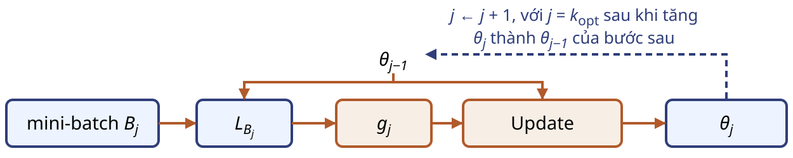
$$g_j=\nabla_\theta L_{B_j}(\theta_{j-1}),\qquad \theta_j=\operatorname{Update}(\theta_{j-1},g_j).$$
Ký hiệu: $j$ bằng $k_{\mathrm{opt}}$ sau khi tăng; $\eta>0$ tốc độ học; $\epsilon_{\mathrm{opt}}>0$ khác $\epsilon_{\mathrm{exp}}$.
Lựa chọn bộ tối ưu không đổi công thức đích, cách thu thập dữ liệu hay lớp hàm.
Bộ tối ưu nhận gradient $g_j$ của hàm mất mát trên mini-batch thứ $j$, tính tại tham số hiện hành $\theta_{j-1}$, và trả tham số mới $\theta_j$; chỉ số $j$ bằng $k_{\mathrm{opt}}$ sau khi tăng, nên $j\ge1$. Update có thể giữ trạng thái phụ, tức các vector lưu qua các bước, cùng kích thước $\theta$: SGD không có, RMSprop giữ một, Adam giữ hai. Hằng $\epsilon_{\mathrm{opt}}$ giữ mẫu số khác $0$, không liên quan tới xác suất thăm dò $\epsilon_{\mathrm{exp}}$. Bộ tối ưu đổi quỹ đạo của $\theta$, nên gián tiếp đổi hành vi, dữ liệu được ghi và giá trị của $\theta^-$ tại các mốc đồng bộ; nhưng công thức đích, cơ chế thu thập và lớp hàm không phụ thuộc lựa chọn bộ tối ưu, nên không bộ tối ưu nào loại được các nguồn bất ổn ở đó. Hàm mất mát giảm trên mini-batch không đồng nghĩa lợi tức đánh giá tăng, vì đích tự đổi theo $\theta^-$ và dữ liệu.
Nguồn: bài giảng gốc lecture8-dqn.pdf (2025–2026), trang 22–23, 28; Goodfellow, Bengio và Courville (2016), Chương 8 (thuật toán tối ưu); hình vẽ mới.
Hạ gradient ngẫu nhiên (SGD)
Nhu cầu: dạng đơn giản nhất của Update, bước ngược hướng gradient.
$$\theta_j=\theta_{j-1}-\eta\,g_j.$$
Không có trạng thái phụ; mọi tọa độ cùng hệ số $\eta$.
Ví dụ. $L=\tfrac12(100\theta_1^2+\theta_2^2)$, $\theta_{j-1}=(0{,}02;\,0{,}02)$, $\eta=0{,}1$: $g_j=(2;\,0{,}02)$, bước $(-0{,}2;\,-0{,}002)$.
Hệ số mỗi bước: $1-100\eta$ cho $\theta_1$, $1-\eta$ cho $\theta_2$;
Gọi là ngẫu nhiên vì $g_j$ tính trên một mini-batch rút ngẫu nhiên từ $\mathcal D$; với $\theta^-$ cố định, kỳ vọng của $g_j$ theo phép rút là gradient của hàm mất mát trung bình trên cả bộ nhớ. Cùng một $\eta$ cho mọi tọa độ làm SGD nhạy với tỉ lệ giữa các tọa độ: với hàm mất mát $\tfrac12(100\theta_1^2+\theta_2^2)$ tại $\theta=(0{,}02;\,0{,}02)$, gradient chính là $(2;\,0{,}02)$, và tọa độ thứ nhất chỉ hội tụ khi $\eta<0{,}02$, khi đó tọa độ thứ hai giảm chưa tới $2\%$ mỗi bước. Trong thực hành, tốc độ học thường giảm theo một lịch định trước. Ví dụ này không cho phép suy ra SGD luôn kém hơn các phương pháp thích nghi. Hạ gradient ngẫu nhiên (stochastic gradient descent, SGD) với hàm mất mát bình phương trên một mẫu trùng cập nhật bán gradient của Bài 07 với $\alpha=2\eta$; trong ví dụ một tham số, $\eta=0{,}25$ cho $\theta_1=0{,}5$.
Nguồn: bài giảng gốc lecture8-dqn.pdf (2025–2026), trang 23–24 (đổi chỉ số $t$ của nguồn thành $j$ vì $t$ đếm bước môi trường); Goodfellow, Bengio và Courville (2016), §8.3.1 (SGD) và §4.3 (điều kiện kém); ví dụ số tự xây dựng.
RMSprop
Nhu cầu: với $L=\tfrac12(100\theta_1^2+\theta_2^2)$, SGD cần $\eta<0{,}02$,
Ký hiệu: $\odot$, $\oslash$: nhân, chia theo từng tọa độ; căn cũng theo tọa độ; $v_0=0$, $\rho\in[0,1)$.
$$v_j=\rho\,v_{j-1}+(1-\rho)\,g_j\odot g_j,\qquad \theta_j=\theta_{j-1}-\eta\,g_j\oslash\bigl(\sqrt{v_j}+\epsilon_{\mathrm{opt}}\bigr).$$
Ví dụ. $\rho=0{,}9$, $g_1=(2;\,0{,}02)$: $v_1=(0{,}4;\,0{,}00004)$, bước $\approx-\eta\,(3{,}16;\,3{,}16)$ khi bỏ qua $\epsilon_{\mathrm{opt}}$.
Ý nghĩa: tọa độ có gradient lớn kéo dài nhận hệ số bước $\eta/(\sqrt{v_j}+\epsilon_{\mathrm{opt}})$ nhỏ.
$v_j$ là trung bình trượt của bình phương gradient theo từng tọa độ, với hệ số suy giảm $\rho$; nó là trạng thái phụ, một vector cùng kích thước với $\theta$. Bước theo tọa độ $k$ là $\eta\,g_{j,k}/(\sqrt{v_{j,k}}+\epsilon_{\mathrm{opt}})$, nên gradient được chia cho độ lớn điển hình của chính nó. Ở bước đầu, $v_1=(1-\rho)\,g_1\odot g_1$, nên mỗi tọa độ có bước $\eta/\sqrt{1-\rho}=\eta\sqrt{10}\approx3{,}16\,\eta$ theo dấu của gradient, dù hai gradient chênh $100$ lần. Ở đây $\epsilon_{\mathrm{opt}}$ đặt ngoài căn; một số thư viện đặt trong căn, nên cần ghi rõ quy ước. Mnih và cộng sự (2015) huấn luyện DQN gốc bằng một biến thể của RMSprop.
Nguồn: bài giảng gốc lecture8-dqn.pdf (2025–2026), trang 23, 25 (đổi chỉ số $t$ của nguồn thành $j$ vì $t$ đếm bước môi trường); Goodfellow, Bengio và Courville (2016), §8.5.2 (RMSProp); Goodfellow và cộng sự đặt hằng ổn định trong căn; ở đây theo nguồn tr. 25 và Kingma và Ba, đặt ngoài căn; Mnih và cộng sự (2015), mục Methods và Extended Data Table 1; ví dụ số tự xây dựng.
Adam
Nhu cầu: RMSprop đi theo dấu của $g_j$ từng mini‑batch;
Ký hiệu: $m_0=v_0=0$; $\beta_1,\beta_2\in[0,1)$; phép toán theo từng tọa độ.
$$m_j=\beta_1m_{j-1}+(1-\beta_1)\,g_j,\qquad v_j=\beta_2v_{j-1}+(1-\beta_2)\,g_j\odot g_j,$$
$$\hat m_j=\frac{m_j}{1-\beta_1^{\,j}},\qquad \hat v_j=\frac{v_j}{1-\beta_2^{\,j}},\qquad \theta_j=\theta_{j-1}-\eta\,\hat m_j\oslash\bigl(\sqrt{\hat v_j}+\epsilon_{\mathrm{opt}}\bigr).$$
Ý nghĩa: hiệu chỉnh bù độ lệch về $0$ do $m_0=v_0=0$: ${\hat m_1=g_1}$, ${\hat v_1=g_1\odot g_1}$, nên bước đầu $\approx\eta$ theo dấu gradient.
$m_j$ là trung bình trượt của gradient, $v_j$ của bình phương gradient; hai vector trạng thái phụ cùng kích thước $\theta$. Khi $m_0=0$, $m_1=(1-\beta_1)\,g_1$: với $\beta_1=0{,}9$, $m_1$ chỉ bằng một phần mười gradient; chia cho $1-\beta_1^{\,1}=0{,}1$ cho lại $g_1$. Tương tự $\hat v_1=g_1\odot g_1$, nên mỗi tọa độ của bước đầu là $\eta\,g_{1,k}/\lvert g_{1,k}\rvert=\pm\eta$ khi bỏ qua $\epsilon_{\mathrm{opt}}$. Khi $j$ lớn, $\beta^{\,j}\to0$ và hiệu chỉnh không còn tác dụng. Trung bình trượt của gradient làm trơn hướng bước qua các mini-batch. Với $\rho=0{,}9$, RMSprop đi $-3{,}16\eta$ rồi $+1{,}47\eta$ ($v_2=0{,}46$). Với $\beta_1=0{,}9$, $\beta_2=0{,}999$, Adam đi $-\eta$ rồi $-0{,}27\eta$, vì $\hat m_2=0{,}08/0{,}19\approx0{,}42$ còn dương và $\hat v_2\approx2{,}50$. Công thức không tạo bảo đảm hội tụ cho DQN, vì đích và dữ liệu vẫn đổi theo $\theta^-$ và hành vi.
Nguồn: bài giảng gốc lecture8-dqn.pdf (2025–2026), trang 23, 26 (đổi chỉ số $t$ của nguồn thành $j$ vì $t$ đếm bước môi trường); Kingma và Ba (2015), "Adam: A Method for Stochastic Optimization", ICLR; Goodfellow, Bengio và Courville (2016), §8.5.3.
So sánh ba bộ tối ưu
Ký hiệu: $\odot$, $\oslash$: nhân, chia theo tọa độ; $m_j$, $v_j$: trung bình trượt của $g_j$, $g_j\odot g_j$ (hệ số $\beta_1$; $\rho$ hoặc $\beta_2$); $\hat m_j$, $\hat v_j$: sau hiệu chỉnh lệch.
phương pháp trạng thái phụ siêu tham số cần chỉnh lượng trừ khỏi $\theta_{j-1}$
SGD không $\eta$ $\eta\,g_j$ RMSprop $v_j$ $\eta,\rho,\epsilon_{\mathrm{opt}}$ $\eta\,g_j\oslash(\sqrt{v_j}+\epsilon_{\mathrm{opt}})$ Adam $m_j,v_j$ $\eta,\beta_1,\beta_2,\epsilon_{\mathrm{opt}}$ $\eta\,\hat m_j\oslash(\sqrt{\hat v_j}+\epsilon_{\mathrm{opt}})$
Chọn bằng thí nghiệm có kiểm soát qua nhiều lần chạy độc lập.
Lựa chọn bộ tối ưu không đổi công thức đích, cách thu thập dữ liệu hay lớp hàm, nên không loại được nguồn bất ổn.
Ba quy tắc khác nhau ở trạng thái phụ và ở cách chia bước theo tọa độ: SGD đi bước tỉ lệ với gradient, RMSprop và Adam chia gradient cho độ lớn điển hình của nó. Vì thang bước khác nhau, cùng một giá trị $\eta$ không so sánh được giữa SGD và hai phương pháp thích nghi; với cả ba, $\eta$ có thể kèm một lịch giảm. Thí nghiệm có kiểm soát giữ cùng kiến trúc, ngân sách bước môi trường, lịch thăm dò và tập hạt giống ngẫu nhiên, chỉnh siêu tham số của từng bộ tối ưu với cùng ngân sách, rồi báo lợi tức đánh giá cùng độ phân tán giữa các lần chạy. Không có lựa chọn thắng tuyệt đối. DQN gốc của Mnih và cộng sự (2015) dùng một biến thể của RMSprop.
Nguồn: bài giảng gốc lecture8-dqn.pdf (2025–2026), trang 27–28; Mnih và cộng sự (2015), mục Methods.
6. Bất ổn và phạm vi bảo đảm của DQNMuốn xác định bảo đảm của DQN, phải tách tác dụng của bộ nhớ phát lại và mạng mục tiêu khỏi bộ ba bất ổn.
Tương quan ngắn hạn · Đích di động · Mốc đồng bộ · Bộ ba bất ổn · Thí nghiệm loại bỏ
Đến cuối phần 5, thuật toán DQN đã có bộ nhớ phát lại và mạng mục tiêu, còn lựa chọn bộ tối ưu không đổi công thức đích, cách thu thập dữ liệu hay lớp hàm. Ở phần 6, chúng ta đặt hai cơ chế cạnh hai nguồn bất ổn, tính độ thay đổi của đích tại mốc đồng bộ, kiểm bộ ba bất ổn trong DQN và thiết kế thí nghiệm loại bỏ. Sản phẩm là kết luận có điều kiện cho phần 7: hai cơ chế giảm hai nguồn bất ổn, không tạo bảo đảm hội tụ.
Hai nguồn bất ổn và hai cơ chế giảm
Nhu cầu: biết hai cơ chế giảm nguồn bất ổn nào, vì với mạng nơ‑ron Q-learning có thể phân kỳ.
Nguồn bất ổn Ví dụ Cơ chế giảm Điều còn lại
Mẫu liền nhau tương quan $4$ mẫu liền nhau, tương quan $0{,}9^k$: ${\approx1{,}1}$ mẫu độc lập Bộ nhớ phát lại Mẫu không độc lập; phân phối đổi theo hành vi Đích bootstrap theo tham số đang học $Q_\theta=\theta$: sau một bước, đích $1\to1{,}45$ Mạng mục tiêu Đích đổi tại mốc đồng bộ
Q-learning bảng hội tụ tới $q_*$ khi MDP hữu hạn, phần thưởng bị chặn, $\gamma<1$, mọi cặp được cập nhật vô hạn lần và bước học thỏa điều kiện Robbins–Monro; với mạng nơ-ron, huấn luyện có thể mất ổn định. Nguồn thứ nhất nằm ở dữ liệu: với tương quan $0{,}9^k$ giữa hai mẫu cách $k$ bước, trung bình bốn gradient liền nhau có cùng phương sai với trung bình của khoảng $1{,}1$ mẫu độc lập. Đây là vấn đề của hạ gradient ngẫu nhiên, có cả khi đích cố định. Nguồn thứ hai là bootstrap: đích chứa ước lượng của chính tham số đang học. Với $Q_\theta=\theta$, $R=1$, $\gamma=0{,}9$, $\theta_0=0$, $\alpha=0{,}5$, một bước đưa $\theta$ lên $0{,}5$ và đích từ $1$ lên $1{,}45$. Mạng mục tiêu giữ tham số tạo đích cố định giữa hai lần đồng bộ; hai cơ chế không bỏ thành phần nào trong ba thành phần xấp xỉ hàm, bootstrap và dữ liệu khác chính sách.
Nguồn: bài giảng gốc lecture8-dqn.pdf (2025–2026), trang 29–31, 33; Mnih và cộng sự (2015), đoạn mở đầu (học tăng cường với mạng nơ-ron có thể mất ổn định hoặc phân kỳ); Sutton và Barto (2018), §6.5, §11.3.
Ví dụ: đích của một mẫu chuyển qua mốc đồng bộ
Mẫu 1: $R_1=1$, $Z_1=0$, $\gamma=0{,}9$; $\theta^-$ ngay trước mốc, $\theta$ tại mốc.
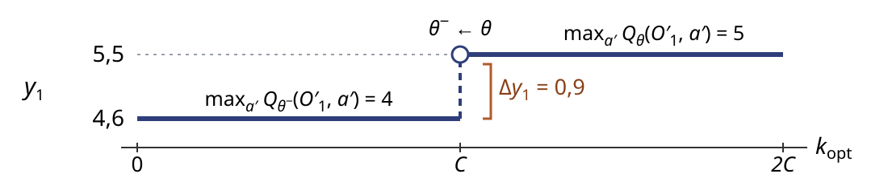
Tính: $y_1=1+0{,}9\cdot4=4{,}6$ trước mốc, $y_1=1+0{,}9\cdot5=5{,}5$ sau mốc.
$$\Delta y_i=\gamma(1-Z_i)\Bigl[\max_{a'}Q_{\theta}(O'_i,a')-\max_{a'}Q_{\theta^-}(O'_i,a')\Bigr].$$
Diễn giải: mẫu 1 có $\Delta y_1=0{,}9\,(5-4)=0{,}9$ dù $(O_1,\dots,U_1)$ đã lưu không đổi.
Giữa hai lần đồng bộ, $\theta^-$ là hằng nên đích của mẫu 1 đứng yên ở $4{,}6$, dù $\theta$ đổi sau mỗi bước tối ưu. Trong công thức, $Q_\theta$ là mạng trực tuyến tại mốc, $Q_{\theta^-}$ là mạng mục tiêu ngay trước mốc. Sau phép gán, mọi mẫu chuyển trong bộ nhớ được tính lại đích bằng tham số mới ở lần được rút kế tiếp; mẫu kết thúc, $Z_i=1$, giữ nguyên đích. Độ thay đổi càng lớn khi $\theta$ đi xa $\theta^-$ trong $C$ bước. $C$ lớn giữ đích đứng yên lâu hơn nhưng để đích lỗi thời hơn và đổi nhiều hơn tại mốc; chọn $C$ là một đánh đổi thực nghiệm. Mạng mục tiêu không làm đích cố định vĩnh viễn và không bảo đảm hội tụ.
Nguồn: bài giảng gốc lecture8-dqn.pdf (2025–2026), trang 31, 33; ví dụ số tự xây dựng trên mẫu 1 của mini-batch hai mẫu chuyển; hình vẽ mới.
Bộ ba bất ổn trong DQN
Nhắc lại: bộ ba bất ổn: xấp xỉ hàm, bootstrap, học khác chính sách cùng có mặt.
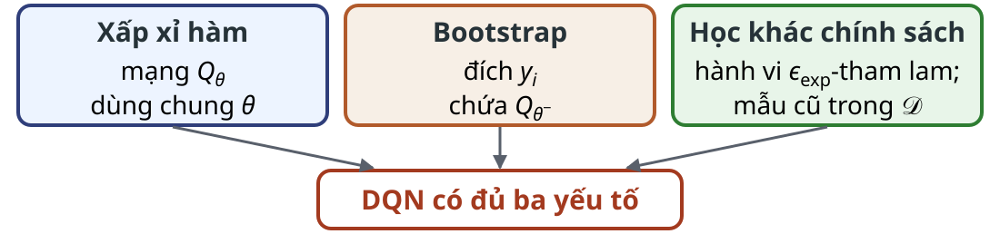
Bảo đảm cần bỏ một yếu tố hoặc giả thiết mạnh; $q_*$ thuộc lớp hàm, dữ liệu bao phủ chưa đủ.
Kết luận: đủ ba yếu tố nên không có bảo đảm hội tụ tổng quát; hai cơ chế không loại yếu tố nào.
Ba yếu tố của DQN ứng với ba yếu tố của Bài 07: một vector $\theta$ cho mọi cặp quan sát–hành động; đích chứa ước lượng $Q_{\theta^-}$ của chính mạng; mẫu trong bộ nhớ do hành vi $\epsilon_{\mathrm{exp}}$-tham lam của các phiên bản $\theta$ cũ sinh ra, khác chính sách đích tham lam. Khi đủ ba yếu tố, Bài 07 có ví dụ tham số tăng không chặn, nên DQN không có bảo đảm hội tụ tổng quát; điều này không có nghĩa DQN luôn phân kỳ. Bảo đảm chỉ có khi bỏ một yếu tố, như TD(0) tuyến tính theo chính sách, hoặc thêm giả thiết mạnh hơn. Riêng $q_*$ thuộc lớp hàm và dữ liệu bao phủ thì chưa đủ: trong ví dụ của Baird, giá trị đúng bằng $0$ biểu diễn được và mọi trạng thái đều được cập nhật, vậy mà tham số phân kỳ (Sutton và Barto, 2018, §11.2).
Nguồn: bài giảng gốc lecture8-dqn.pdf (2025–2026), trang 12–13, 29–34; ghi chú bài giảng Bài 07, Định nghĩa 07.38, Mệnh đề 07.37; Sutton và Barto (2018), §11.2, §11.3; hình vẽ lại.
Ví dụ: hai trạng thái với mạng mục tiêu
TD(0) dự đoán khác chính sách, chỉ cập nhật $s_1\to s_2$; $\gamma=0{,}9$, $\alpha=0{,}1$.
Không có mạng mục tiêu: $w_{n+1}=w_n+0{,}1\,(0{,}9\cdot2w_n-w_n)=1{,}08\,w_n$.
Giữ $w^-$ cố định $C$ bước, $w_0=w^-$: $w_C=(1{,}8-0{,}8\cdot0{,}9^C)\,w^-$.
Với $C=10$: hệ số $1{,}521$ mỗi chu kỳ, so với $1{,}08^{10}\approx2{,}159$.
Diễn giải: tăng chậm hơn theo bước nhưng vẫn phân kỳ khi $w^-\ne0$, vì hệ số mỗi chu kỳ ${\ge1{,}08>1}$.
Ví dụ kiểm khẳng định mạng mục tiêu không loại yếu tố nào, trên chính phản ví dụ Mệnh đề 07.37. Giá trị xấp xỉ là $\hat v(s)=x(s)\,w$, nên $\hat v(s_1)=w$ và $\hat v(s_2)=2w$ dùng chung một tham số. Cập nhật TD(0) bán gradient tại $s_1$ là $w\leftarrow w+\alpha\,[R+\gamma\hat v(s_2)-\hat v(s_1)]\,x(s_1)$. Khi mục tiêu dùng $w$ hiện hành, hệ số mỗi bước là $1+0{,}1\,(1{,}8-1)=1{,}08$. Khi mục tiêu dùng $w^-$ cố định, mục tiêu là hằng $1{,}8\,w^-$ và $w_k-1{,}8w^-=0{,}9^k(w_0-1{,}8w^-)$, nên với $w_0=w^-$ được công thức trên; sau đồng bộ $w^-\leftarrow w_C$. Hệ số tăng theo $C$, nhỏ nhất bằng $1{,}08$ khi $C=1$ và tiến tới $1{,}8$; với $C=10$, mỗi bước tương đương nhân khoảng $1{,}043$. Ví dụ là TD(0) dự đoán, không phải Q-learning.
Nguồn: ghi chú bài giảng Bài 07, Ví dụ 07.15 và Mệnh đề 07.37; Sutton và Barto (2018), §11.2; phép tính với mạng mục tiêu tự xây dựng.
Bài tập: thí nghiệm loại bỏ
Bỏ bộ nhớ phát lại Tương quan mini‑batch, độ đa dạng mẫu, lợi tức.
Bỏ mạng mục tiêu ($C=1$) Tốc độ đổi đích, sai số TD, dao động tham số.
Câu hỏi: dự đoán tác động lên các đại lượng của mỗi nhánh; thiết kế thí nghiệm loại bỏ (ablation) công bằng, tổng hợp nhiều lần chạy độc lập.
Bỏ bộ nhớ phát lại nghĩa là mỗi bước tối ưu dùng các mẫu chuyển vừa thu theo thứ tự thời gian; bỏ mạng mục tiêu nghĩa là đặt $C=1$, để đích được tính lại bằng tham số mới sau mỗi bước tối ưu. Gợi ý: một nhánh công bằng chỉ khác nhánh đầy đủ ở đúng một thành phần; các chỉ số đo và số lần chạy được chọn trước khi chạy; kết luận dựa trên nhiều lần chạy độc lập, không dựa trên một đường học. Đề không cho ngân sách tính toán, nên lời giải không ấn định số hạt giống ngẫu nhiên cụ thể.
Nguồn: bài tập phân tích xây từ bài giảng gốc lecture8-dqn.pdf (2025–2026), trang 29–36; Mnih và cộng sự (2015), Extended Data Table 3 (bốn tổ hợp có hoặc không có hai cơ chế).
Bài tập: thí nghiệm loại bỏ
Lời giải: bỏ phát lại, tương quan tăng; $C=1$, đích đổi mỗi bước.
Đổi một thành phần; giữ kiến trúc, ngân sách, bộ tối ưu, thăm dò.
Cùng hạt giống (seed), ghép cặp.
Đo lợi tức đánh giá, sai số TD, chuẩn gradient.
Báo trung bình, trung vị, độ phân tán.
Dự đoán cần số đo; không suy ra hội tụ.
Mỗi nhánh đổi đúng một thành phần, nên mọi khác biệt quy được về thành phần đó. Các thành phần còn lại giữ cố định các nguồn biến thiên khác, kể cả ngân sách bước môi trường; đổi cả bộ tối ưu và cơ chế cùng lúc thì không tách được tác dụng. Mọi nhánh dùng cùng tập hạt giống ngẫu nhiên, nên với mỗi hạt giống có một cặp kết quả, và so hiệu trong từng cặp giảm nhiễu so với so hai nhóm độc lập. Lợi tức đánh giá đo bằng chính sách tham lam theo $Q_\theta$ trên các lượt riêng, không phải lợi tức của các lượt huấn luyện có thăm dò; sai số TD và chuẩn gradient cho thấy độ ổn định của tối ưu. Kết quả cần cả độ phân tán, vì một nhánh có thể có trung bình cao nhưng vài lần chạy phân kỳ. Theo phân tích của phần 6, bỏ bộ nhớ phát lại làm tăng tương quan trong mini-batch, còn $C=1$ làm đích đổi sau mỗi bước tối ưu; hai dự đoán này cần được kiểm bằng số đo, và không nhánh nào tạo bảo đảm hội tụ.
Nguồn: bài tập phân tích xây từ bài giảng gốc lecture8-dqn.pdf (2025–2026), trang 29–36; Mnih và cộng sự (2015), Extended Data Table 3.
7. Tổng kết và chuyển tiếpMuốn dùng DQN đúng, phải kiểm đích, dữ liệu, đồng bộ và phạm vi của kết luận.
Kết quả và giả thiết · So sánh ba phương pháp · Một bước DQN trên CartPole · Bài 09
Đến cuối phần 6, chúng ta đã có đích hồi quy có mặt nạ kết thúc, bộ nhớ phát lại, hàm mất mát với dừng gradient, quy tắc cập nhật của bộ tối ưu và phạm vi bảo đảm của DQN. Ở phần 7, chúng ta đặt mỗi kết quả cạnh giả thiết không được bỏ, so DQN với Q-learning bảng và tuyến tính, giải một bước DQN trên CartPole và trả lời vấn đề trung tâm có điều kiện. Ở Bài 09, chúng ta xét độ chệch của phép cực đại trong đích và Double DQN.
Kết quả và giả thiết của bài
Kết quả Giả thiết không được bỏ Công thức hoặc thuật toán
Mạng giá trị hành động $\mathcal A$ hữu hạn; quan sát (Atari: bốn khung) đủ Markov $\mathbf q_\theta(o)\in\mathbb R^{\lvert\mathcal A\rvert}$ Đích hồi quy $Z_i$ là kết thúc của MDP; $\theta^-$ cố định giữa hai lần đồng bộ ${y_i=R_i+\gamma(1-Z_i)}$ ${\max_{a'}Q_{\theta^-}(O'_i,a')}$ Gradient của hàm mất mát đích trong $\operatorname{sg}$; $q_i$ theo $A_i$ đã lưu $\nabla_\theta L_B=\tfrac2b\sum_i(q_i-y_i)\nabla_\theta q_i$ Bộ nhớ phát lại rút đều; tối ưu khi ${\lvert\mathcal D\rvert\ge N_{\mathrm{start}}}$ giảm tương quan ngắn hạn; mẫu vẫn không độc lập
Mỗi hàng đặt một kết quả cạnh giả thiết mà thiếu nó thì công thức sai nghĩa. Mạng trả một giá trị cho mỗi hành động chỉ khi tập hành động hữu hạn; mục tiêu viết theo quan sát chỉ đúng nghĩa Q-learning khi quan sát, ở Atari là bốn khung xếp chồng, đủ Markov. Mặt nạ chỉ dùng $Z_i$: mẫu bị cắt ngắn vẫn bootstrap. Đích là hằng giữa hai lần đồng bộ nhờ $\theta^-$ cố định. Gradient chỉ đi qua $q_i$, giá trị của hành động đã lưu; đích nằm trong phép dừng gradient. Bộ nhớ phát lại rút đều làm hiếm các cặp liền nhau nhưng không biến dữ liệu do một tác tử thu thập thành mẫu độc lập của một phân phối cố định.
Nguồn: tổng hợp bài giảng gốc lecture8-dqn.pdf (2025–2026), trang 14–22, 29–34; Mnih và cộng sự (2015), mục Methods.
Kết quả và giả thiết của bài
Kết quả Giả thiết không được bỏ Công thức hoặc thuật toán
Đích không cần tỉ số lấy mẫu quan trọng đích một bước; $O_i$ đủ Markov, động lực không đổi hành vi chỉ quyết định tần suất $(O_i,A_i)$ Bộ tối ưu $j=k_{\mathrm{opt}}$ sau khi tăng; $g_j$ tính tại $\theta_{j-1}$ trên $B_j$ $\theta_j=\operatorname{Update}(\theta_{j-1},g_j)$ Đồng bộ sau bước tối ưu, khi $k_{\mathrm{opt}}\bmod C=0$; $\theta^-$ trước mốc $\Delta y_i=\gamma(1-Z_i)$ ${\bigl[\max Q_\theta-\max Q_{\theta^-}\bigr](O'_i)}$ Phạm vi bảo đảm đủ bộ ba bất ổn không có bảo đảm hội tụ tổng quát
Đích một bước không cần tỉ số lấy mẫu quan trọng vì $A_i$ là đối số điều kiện của $Q(O_i,A_i)$ và phần tiếp nối được tính bằng phép cực đại. Bộ tối ưu, như SGD hay Adam, không đổi công thức đích, cách thu thập dữ liệu hay lớp hàm. Đồng bộ đặt sau bước cập nhật và sau khi tăng $k_{\mathrm{opt}}$; kiểm $C$ trước khi tăng làm lần đồng bộ đầu xảy ra sau bước tối ưu thứ nhất. Tại mốc, đích của mỗi mẫu chưa kết thúc đổi đúng $\gamma$ nhân hiệu hai giá trị cực đại tại $O'_i$. Hàng cuối chỉ nói không có định lý hội tụ chung, chưa nói DQN phân kỳ. Bộ nhớ phát lại và mạng mục tiêu giảm bất ổn, không bỏ yếu tố nào của bộ ba.
Nguồn: tổng hợp bài giảng gốc lecture8-dqn.pdf (2025–2026), trang 12–13, 21–34; ghi chú bài giảng Bài 07, Định nghĩa 07.38; Sutton và Barto (2018), §11.3.
So sánh Q-learning bảng, tuyến tính và DQN
Nhắc lại: ${y=R+\gamma(1-Z)\max_{a'}\hat Q(O',a')}$; $\hat Q$ lần lượt là $Q$, $x^\top w$, $Q_{\theta^-}$.
Phương pháp Quy tắc cập nhật Dữ liệu dùng Điều kiện dừng
Q-learning bảng $Q(S,A)\leftarrow Q(S,A)+\alpha\bigl(y-Q(S,A)\bigr)$ mẫu vừa thu, dùng một lần sau số cập nhật định trước Q-learning tuyến tính $w\leftarrow w+\alpha\bigl(y-x^\top w\bigr)\,x$, $x=x(S,A)$ mẫu vừa thu, dùng một lần sau số lượt định trước DQN $\theta\leftarrow\operatorname{Update}(\theta,\nabla_\theta L_B)$; $\theta^-\leftarrow\theta$ mỗi $C$ bước tối ưu $b$ mẫu rút đều từ $\mathcal D$ mỗi $F$ bước $t=T$
Hành vi $\epsilon_{\mathrm{exp}}$-tham lam ($\varepsilon$ của Bài 06); không điều kiện dừng nào là tiêu chuẩn hội tụ.
Ba phương pháp dùng cùng dạng đích và khác nhau ở chỗ đọc phép cực đại. Q-learning bảng đọc trên bảng chưa cập nhật và chỉ đổi ô $(S,A)$; Q-learning bán gradient đọc trên $x^\top w$ với $w$ hiện tại và đổi các thành phần của $w$ ứng với thành phần khác $0$ của $x(S,A)$; DQN đọc trên $Q_{\theta^-}$, giữ cố định giữa hai lần đồng bộ. Hai phương pháp đầu dùng mỗi mẫu chuyển một lần, ngay khi thu. DQN chỉ tối ưu khi $\lvert\mathcal D\rvert\ge N_{\mathrm{start}}$; với $b=32$, $F=4$ của Mnih và cộng sự, mỗi mẫu được rút khoảng $b/F=8$ lần. Với $N=b=F=C=1$, bộ tối ưu SGD và mạng tuyến tính, quy tắc cập nhật của DQN trùng Q-learning bán gradient với $\alpha=2\eta$. Trong thực hành có thể dừng sớm khi lợi tức đánh giá đạt ngưỡng chọn trước; Thuật toán 08.13 chỉ dừng khi $t=T$.
Nguồn: ghi chú bài giảng Bài 06, Thuật toán 06.16; Bài 07, Định nghĩa 07.35, Thuật toán 07.36; Thuật toán 08.13; Mnih và cộng sự (2015), Extended Data Table 1.
So sánh Q-learning bảng, tuyến tính và DQN
Phương pháp Giả thiết không được bỏ Kết luận
Q-learning bảng MDP hữu hạn, phần thưởng bị chặn, $\gamma<1$, mẫu từ MDP; mọi cặp vô hạn lần; Robbins–Monro theo cặp $Q_t\to q_*$ hầu chắc chắn Q-learning tuyến tính có cả xấp xỉ hàm, bootstrap, học khác chính sách không bảo đảm chung; có thể phân kỳ DQN cùng ba yếu tố; bộ nhớ phát lại, mạng mục tiêu không bỏ yếu tố nào không bảo đảm hội tụ tổng quát
Hàng đầu là định lý hội tụ của Q-learning bảng; thiếu một giả thiết thì định lý không còn áp dụng, chẳng hạn một cặp không bao giờ được thử giữ mãi giá trị khởi tạo. Hai hàng sau chỉ khẳng định không có định lý hội tụ chung. Phản ví dụ: TD(0) dự đoán khác chính sách trên hai trạng thái dùng chung $w$, $x(s_1)=1$, $x(s_2)=2$, $R=0$, $\gamma=0{,}9$, $\alpha=0{,}1$, chỉ cập nhật $s_1\to s_2$, cho $w$ nhân $1{,}08$ mỗi bước (Mệnh đề 07.37). Khi mỗi trạng thái chỉ có một hành động, phép cực đại trong đích chỉ chọn hành động duy nhất, nên Q-learning bán gradient trên dữ liệu chỉ gồm chuyển $s_1\to s_2$ cho đúng dãy này. Giữ $w^-$ cố định $C=10$ bước chỉ hạ hệ số tương đương xuống khoảng $1{,}043$. Hai cơ chế không bỏ yếu tố nào của bộ ba, nên tác dụng của chúng được đánh giá bằng thí nghiệm.
Nguồn: ghi chú bài giảng Bài 06, Định lý 06.21; Bài 07, Mệnh đề 07.37, Định nghĩa 07.38; Nhận xét 08.21; Sutton và Barto (2018), §11.2, §11.3.
Bài tập: một bước DQN trên CartPole
CartPole-v1: $R=1$ mỗi bước; $Z=1$ khi cột đổ hay xe ra ngoài; $U=1$ ở bước $500$.
Cho $\gamma=0{,}9$, $b=2$, $C=1000$; $k_{\mathrm{opt}}=999$ trước bước tối ưu này.
$i$ $R_i$ $Z_i$ $U_i$ $\max_{a'}Q_{\theta^-}(O'_i,a')$ $q_i$ $1$ $1$ $0$ $1$ $10$ $9$ $2$ $1$ $1$ $0$ $10$ $2$
Câu hỏi: (a) tính $y_1$, $y_2$; (b) tính $L_B$ và $\partial L_B/\partial q_i$;
Bài tập tổng hợp dùng đích có mặt nạ, hàm mất mát trên mini-batch và quy tắc đồng bộ. Mẫu 1 là bước cuối của một lượt bị cắt ngắn ở bước $500$: cột chưa đổ, xe chưa ra ngoài, nên MDP chưa kết thúc. Mẫu 2 là bước cột đổ. Với phần thưởng $+1$ mỗi bước và $\gamma=0{,}9$, mọi lợi tức chiết khấu không vượt $1/(1-\gamma)=10$. Nhắc lại: $y_i=R_i+\gamma(1-Z_i)\max_{a'}Q_{\theta^-}(O'_i,a')$, $L_B=\tfrac1b\sum_i(y_i-q_i)^2$ với $y_i$ là hằng theo $\theta$, và đồng bộ khi $k_{\mathrm{opt}}\bmod C=0$, kiểm sau khi tăng $k_{\mathrm{opt}}$. Gợi ý: xác định cờ nào xóa nhánh bootstrap trước khi tính sai số.
Nguồn: tài liệu Gymnasium cho môi trường CartPole-v1 (phần thưởng, điều kiện kết thúc, giới hạn $500$ bước); notebook thực hành Bài 04, thuc-hanh-cartpole-quy-hoach-dong.ipynb, phần 2; bài giảng gốc lecture8-dqn.pdf (2025–2026), trang 21–22; số liệu tự xây dựng.
Bài tập: một bước DQN trên CartPole
Lời giải: $\gamma=0{,}9$, $b=2$; với $m_i=\max_{a'}Q_{\theta^-}(O'_i,a')$, bộ $(R_i,Z_i,U_i,m_i,q_i)$ là $(1;0;1;10;9)$, $(1;1;0;10;2)$.
câu mẫu 1 mẫu 2
(a) $y_i$, mặt nạ $1-Z_i$ $1+0{,}9\cdot1\cdot10=10$ $1+0{,}9\cdot0\cdot10=1$ (b) $\delta_i$; $\partial L_B/\partial q_i=q_i-y_i$ $1$; $-1$ $-1$; $1$ (b) $L_B$ $\tfrac12(1^2+1^2)=1$ (c) mặt nạ $1-(Z_i\lor U_i)$ $y_1=1$, $\delta_1=-8$; sai, vì cắt ngắn không kết thúc MDP
(d) sau cập nhật, $k_{\mathrm{opt}}=1000$ và $1000\bmod1000=0$, nên $\theta^-\leftarrow\theta$.
Kết luận: chỉ $Z$ che bootstrap; đồng bộ xét sau khi tăng $k_{\mathrm{opt}}$.
Câu (a): mẫu 1 có $Z_1=0$ dù $U_1=1$, nên đích giữ phần bootstrap $0{,}9\cdot10=9$; mẫu 2 có $Z_2=1$, nên giá trị $10$ của mạng mục tiêu tại quan sát cột đã đổ không vào đích. Câu (b): với $b=2$, hệ số $\tfrac2b$ bằng $1$, nên đạo hàm theo $q_i$ là $q_i-y_i$; bước hạ gradient kéo $q_1$ lên và $q_2$ xuống khi xét hai dự đoán như hai biến riêng. Câu (c): mặt nạ gộp hạ đích của mẫu 1 đi $9$ và đổi dấu sai số từ $1$ thành $-8$; đích của mẫu 2 vẫn bằng $1$ vì $Z_2=1$. Quan sát của CartPole gồm vị trí, vận tốc xe, góc và vận tốc góc của cột, không có số bước, nên đích bị hạ ở bước $500$ kéo xuống giá trị của mọi quan sát giống quan sát đó, ở bất kỳ thời điểm nào. Câu (d): $k_{\mathrm{opt}}$ tăng sau cập nhật rồi mới so với bội của $C$. Bốn lỗi thường gặp: dùng cờ gộp $Z\lor U$ làm mặt nạ; quên mặt nạ ở mẫu 2, cho $y_2=10$ và $\delta_2=8$; lấy giá trị lớn nhất của $\mathbf q_\theta(O_i)$ thay cho giá trị của hành động đã lưu; kiểm $C$ trước khi tăng $k_{\mathrm{opt}}$, khi đó bước này không đồng bộ vì $999\bmod1000\ne0$ và lần đồng bộ lùi một bước tối ưu.
Nguồn: lời giải theo Định nghĩa 08.4, 08.6, 08.10 và Thuật toán 08.13 của ghi chú bài giảng; Pardo và cộng sự (2018) về cắt ngắn theo thời gian; số liệu tự xây dựng.
Trả lời vấn đề trung tâm
Học $q_*$ khi quan sát là vector liên tục hoặc ảnh, hành động hữu hạn, không có mô hình.
Với $\mathbf q_\theta$ và $\theta^-$ cố định giữa hai lần đồng bộ, nhãn hồi quy đứng yên.
Với rút đều từ $\mathcal D$, tương quan ngắn hạn giảm; mẫu chưa độc lập.
Với $\operatorname{sg}(y_i)$ và chọn theo $A_i$, gradient chỉ đi qua $Q_\theta(O_i,A_i)$.
Với mọi bộ tối ưu, nguồn bất ổn vẫn còn.
Khi đủ bộ ba bất ổn, không bảo đảm hội tụ tổng quát; đánh giá qua nhiều lần chạy.
Nguồn: bài giảng gốc, tr. 12–34; Sutton và Barto (2018), §11.3, §16.5; Mnih và cộng sự (2015).
Dòng số $N$ trả lời có điều kiện cho phần $N$. Đích $4{,}6$ của mẫu chuyển chưa kết thúc giữ nguyên tới mốc đồng bộ rồi đổi $0{,}9$. Bốn mẫu liền nhau với tương quan $0{,}9^k$ chỉ tương đương khoảng $1{,}1$ mẫu độc lập; rút đều làm cặp liền nhau hiếm, nhưng mọi mẫu vẫn do một tác tử thu thập. Trên mini-batch hai mẫu, gradient chỉ đi qua hai dự đoán, với đạo hàm $(-1{,}5;\,0{,}5)$. Bộ tối ưu chỉ đổi gradient thành bước tham số. Với hai trạng thái dùng chung tham số, hệ số tăng $1{,}08$ mỗi bước chỉ còn khoảng $1{,}043$ khi $C=10$. Vì không có định lý, hai cơ chế được đánh giá bằng thí nghiệm, như thí nghiệm loại bỏ của Mnih và cộng sự.
Nguồn: bài giảng gốc lecture8-dqn.pdf (2025–2026), trang 12–34; Sutton và Barto (2018), §11.3, §16.5; Mnih và cộng sự (2015), Extended Data Table 3.
Câu hỏi tự kiểm tra
Câu hỏi: trả lời và nêu kết quả đã dùng.
Bộ nhớ phát lại giảm nguồn bất ổn nào, để lại giới hạn nào?
Mạng mục tiêu làm chậm đại lượng nào, và không loại yếu tố nào?
Khi nào mẫu chuyển bị cắt ngắn vẫn giữ phần bootstrap?
Adam có loại được bộ ba bất ổn không?
Lời giải: (1) bộ nhớ phát lại giảm tương quan giữa các mẫu liền nhau, vì với mini-batch hai mẫu, xác suất hai mẫu rút được liền nhau chỉ khoảng $2/N$; mẫu vẫn không độc lập cùng một phân phối cố định, phân phối đổi theo hành vi, và không có bảo đảm hội tụ (Nhận xét 08.19, 08.9). (2) Mạng mục tiêu làm chậm sự thay đổi của đích: đích đứng yên giữa hai lần đồng bộ và đổi $\Delta y_i$ tại mốc; nó không loại yếu tố nào của bộ ba bất ổn (Nhận xét 08.20, 08.21). (3) Khi $U=1$, $Z=0$: MDP chưa kết thúc, mặt nạ chỉ dùng $1-Z$ (Định nghĩa 08.6). (4) Không; bộ tối ưu chỉ đổi gradient thành bước tham số, và lựa chọn của nó không đổi công thức đích, cách thu thập dữ liệu hay lớp hàm (Định nghĩa 08.15, Nhận xét 08.21). Bài giảng gốc nêu thêm ba hướng thảo luận: vì sao bộ nhớ phát lại làm cập nhật mini-batch đáng tin hơn; vì sao bộ tối ưu thích nghi vẫn giúp DQN dù không sửa đích; cách tăng thăm dò trong DQN.
Nguồn: bài giảng gốc lecture8-dqn.pdf (2025–2026), trang 29–36; ghi chú bài giảng, Định nghĩa 08.6, 08.15, Nhận xét 08.9, 08.19–08.21.
Bài tập về nhà và tài liệu đọc
Mạch Bài tập
4 08.1 (một mini‑batch), 08.2 (lỗi cài đặt đích) 5 08.5 (hệ số bước của SGD) 6 08.3 (thí nghiệm loại bỏ), 08.5 (độ thay đổi của đích) 7 08.4 (một bước DQN trên CartPole)
Tài liệu đọc: Sutton và Barto (2018), §11.3, §16.5; Mnih và cộng sự (2015).
Ghi chú bài giảng · Bài tập: chưa có
Bài 09 xét độ chệch của phép cực đại (maximization bias) trong đích, Double DQN, rồi gradient chính sách.
Năm bài tập nằm ở mục bài tập củng cố của ghi chú bài giảng, mỗi bài có gợi ý và lời giải; bốn bài đầu đã giải trên trang chiếu: Bài tập 08.1 tính đích, hàm mất mát và đạo hàm trên mini-batch hai mẫu; Bài tập 08.2 sửa năm lỗi trong đoạn mã tính đích; Bài tập 08.3 thiết kế thí nghiệm loại bỏ; Bài tập 08.4 là bài tổng hợp trên CartPole; Bài tập 08.5 tính hệ số bước của SGD và độ thay đổi của đích tại mốc đồng bộ. Sutton và Barto (2018) bàn bộ ba bất ổn ở §11.3 và DQN trên Atari ở §16.5; Mnih và cộng sự (2015) cho thuật toán gốc và các thí nghiệm. Bài 09 xét độ chệch của phép cực đại trong đích của DQN, Double DQN, rồi gradient chính sách.
![Sơ đồ hai vòng. Vòng thu thập bên trái, mỗi bước tăng bộ đếm t: mạng trực tuyến Q theta chọn hành động A theo quy tắc epsilon exp tham lam và gửi cho môi trường; môi trường trả quan sát kế tiếp O phẩy về mạng trực tuyến và gửi mẫu chuyển O, A, R, O phẩy, Z, U vào bộ nhớ phát lại D. Vòng tối ưu bên phải, mỗi bước tăng bộ đếm k opt: rút đều b mẫu từ bộ nhớ thành mini-batch B; mạng mục tiêu Q theta trừ cấp đích y i cho mini-batch; gradient của hàm mất mát L B theo theta cập nhật mạng trực tuyến. Mũi tên nét đứt từ mạng trực tuyến sang mạng mục tiêu: mỗi C bước tối ưu gán theta trừ bằng theta.](img/lec-08/dqn-training-loop.svg)
![Hai hàng. Hàng trên: quan sát O kích thước b, 4, H, W vào mạng trực tuyến Q theta, ra mảng b nhân số hành động; phép chọn theo hành động nhận A kích thước b từ ô bên dưới, lấy một phần tử mỗi hàng và cho q kích thước b. Hàng dưới: quan sát kế tiếp O phẩy kích thước b, 4, H, W vào mạng mục tiêu Q theta trừ, ra mảng b nhân số hành động; phép cực đại theo chiều hành động cho mảng kích thước b; cùng R và Z kích thước b từ ô bên trên tạo đích y kích thước b. q và y cùng vào ô hàm mất mát L B, một số vô hướng. Ghi chú dưới cùng: U kích thước b không vào L B.](img/lec-08/tensor-contract.svg)